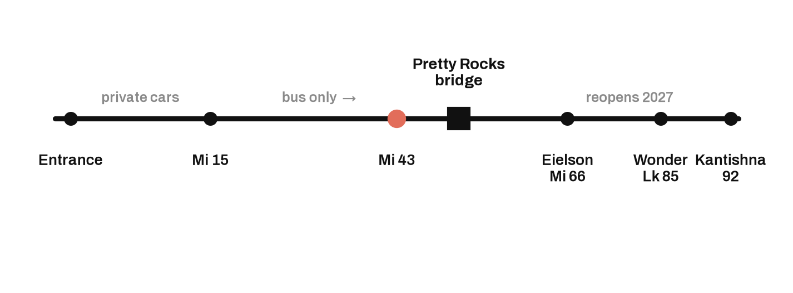
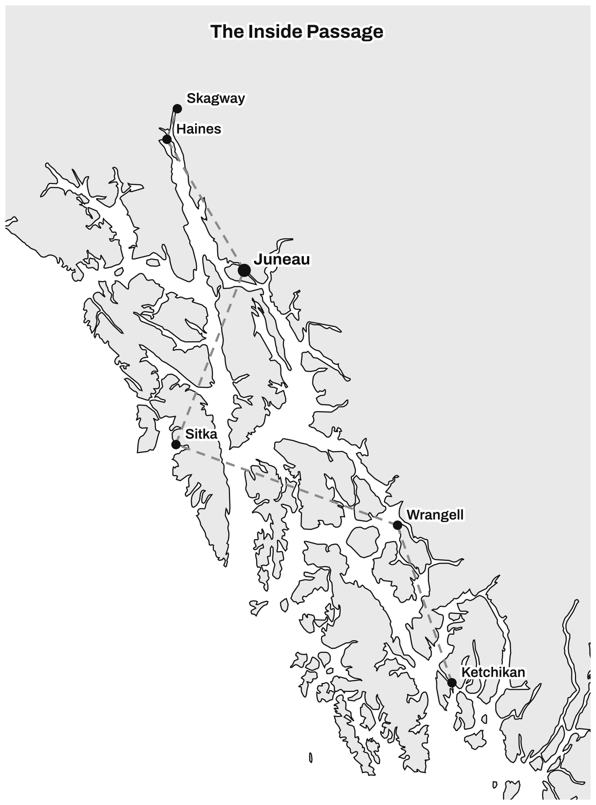
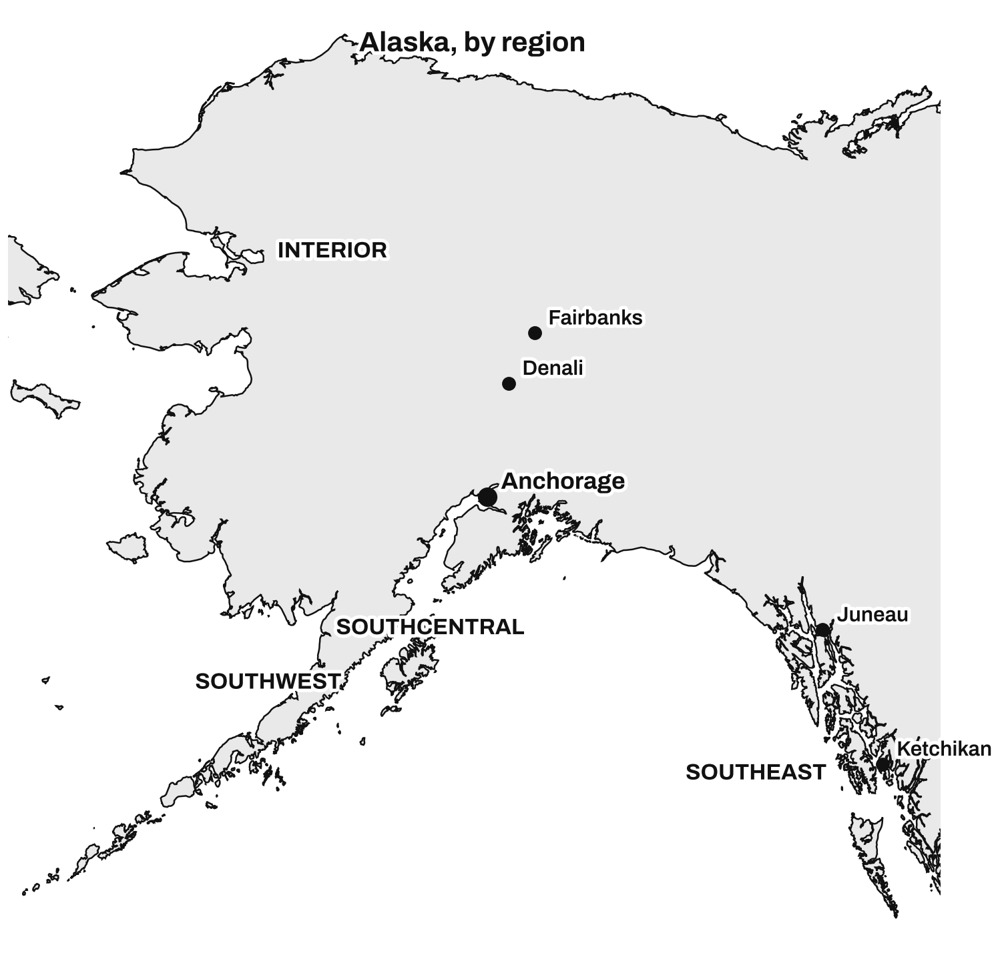
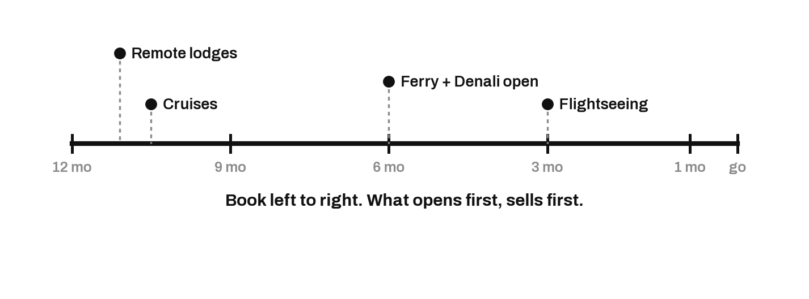
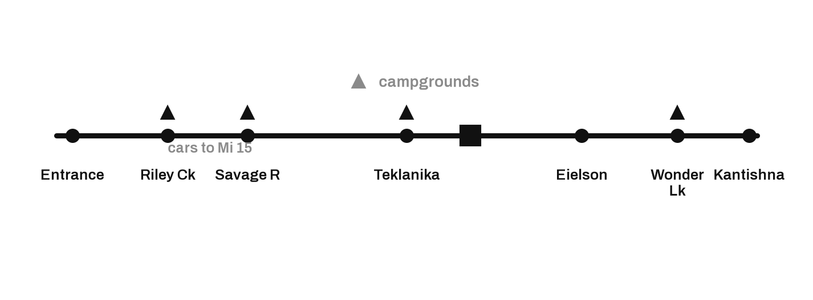
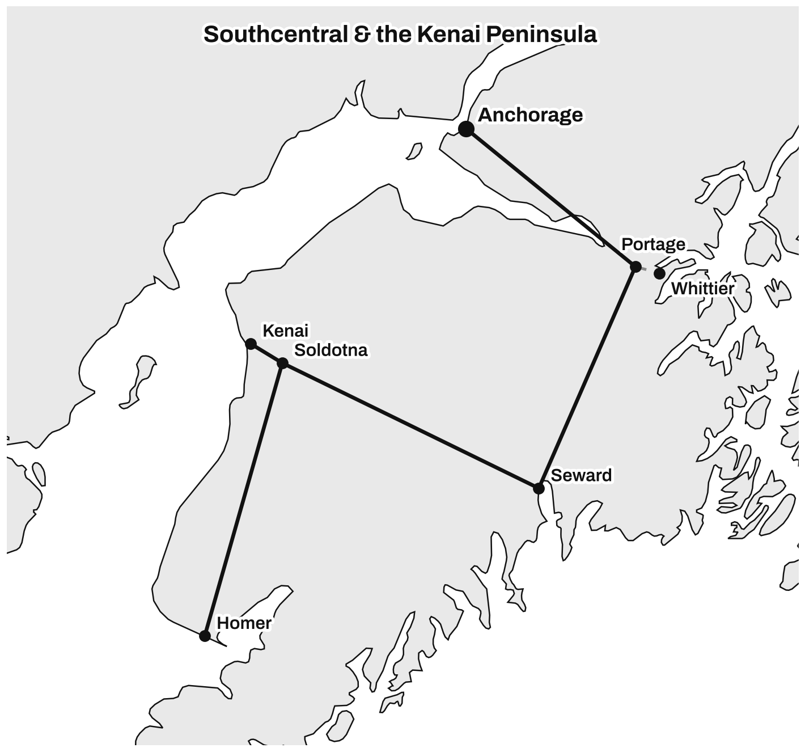
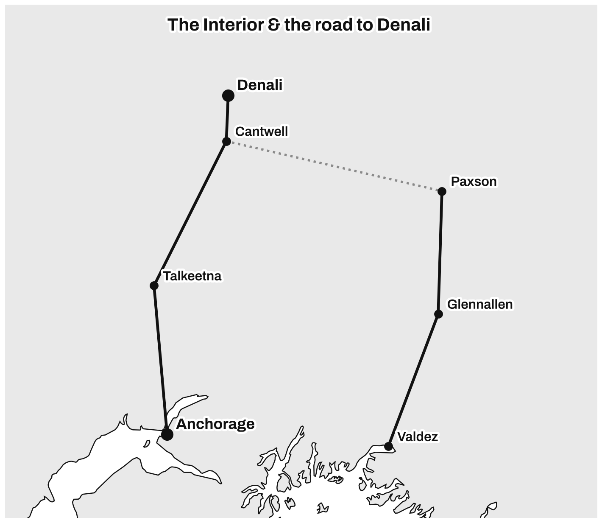
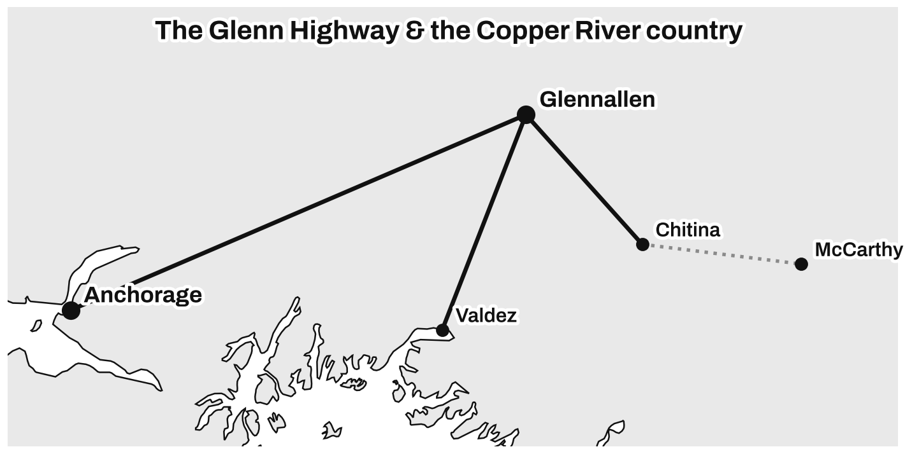
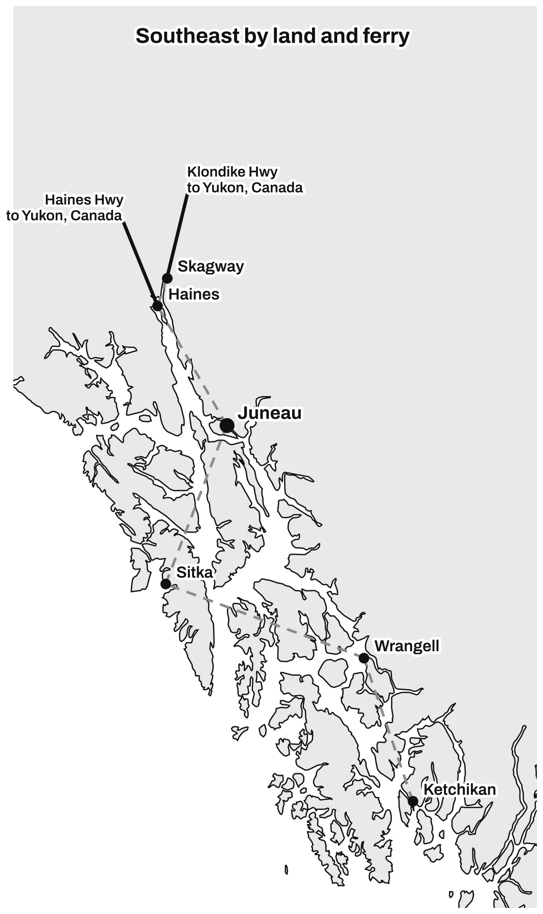
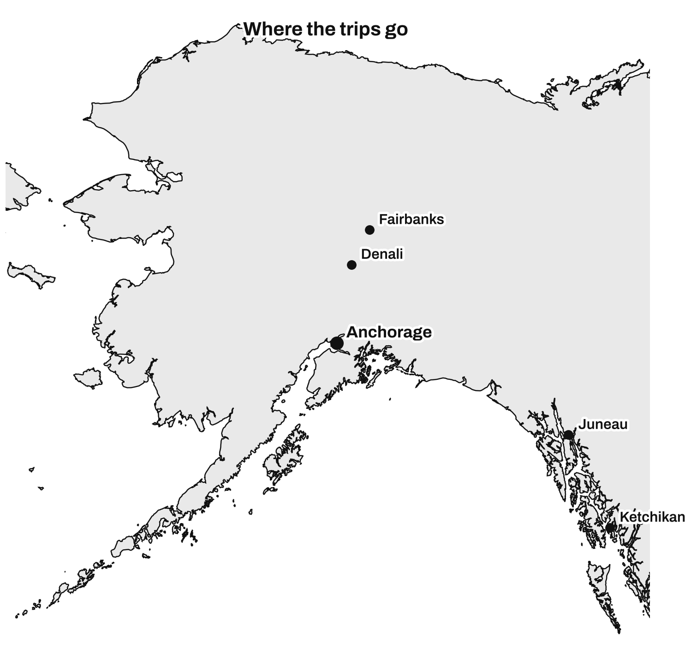

ALASKA BY LAND & SEA TRAVEL GUIDE 2027
Copyright © 2026 Noel Veylan. All rights reserved.
No part of this book may be reproduced or transmitted in any form without written permission from the publisher, except brief quotations in a review.
A planning note.
This guide is built for planning. Road conditions, ferry schedules, park access, fees, and booking windows in Alaska change with the season and sometimes overnight. Every figure in this book was checked against a primary source at the time of writing. Verify anything that carries a date, a price, or a booking rule against the official source before you book. The free companion page listed in the back tracks what changes after printing.
Land and Sea Travel Guides
Travel guides built on research, not reminiscence.
First edition. Printed for the 2027 season.
Alaska is not one trip. It is at least three, and most people accidentally book a blend of two of them without noticing until they are standing on a dock in the rain wondering why the plan feels wrong.
There is the ship. There is the road. And there is the version where you do both, which is what most first visitors actually end up doing, whether they meant to or not. This book is built around that split, because the single most expensive mistake in Alaska is planning for one trip and taking another.
So before you read further, decide which of these is you. You can change your mind later. The book is arranged so you can.
"I'm cruising." You have booked, or are about to book, a sailing through the Inside Passage or up to the Gulf. Your Alaska is a series of port days, each one a few hours long, each one a small decision about what is reachable before the ship leaves without you. Start with Chapter 1, then go straight to Part Two. The port chapters tell you what you can actually do in the hours you have, and where the ship's own excursion desk is quietly overcharging you.
"I'm driving." You are renting a car or an RV and covering ground on your own schedule. Your Alaska is highways, gravel, fuel math, and campsites that fill months out. Read Chapter 1, then jump to Part Three. Every regional chapter is built the same way, so once you learn the pattern you can plan a day in any of them in about ten minutes.
"I'm doing both." You are flying in, spending a few days on land, boarding a ship, and probably adding more land at the other end. This is the trip the series name is about, and it is the trip almost nobody else writes for honestly. Read the whole book in order. Chapter 11 is written specifically for you, and the itineraries in Part Five sequence the handoffs so you are not paying for a hotel night you sleep through on a moving ship.
A few conventions, so nothing surprises you later.
Every price in this book is a checkout total. When we say a night costs a certain amount, we mean the number your card is actually charged, taxes and fees included, not the rate the booking site shows you before it adds them at the end. Alaska's headline prices and its real prices are two different numbers, and the gap is where budgets break.
Every booking window, fee, and access rule was verified against a primary source at the time of writing. Park services. State agencies. The ferry system itself. Not travel blogs, which contradict each other constantly, and which this year are full of confident itineraries that send you down a road that is not open. Where something is genuinely unsettled, and in Alaska for 2027 several things are, we say so plainly rather than print a clean number that turns out wrong. An honest "this is in flux, check before you book" is worth more than a tidy lie.
And because Alaska changes between the day this book is printed and the day you travel, there is a companion page online that tracks what moves. Road status. Fee changes. Ferry schedule revisions. The address is in the back, along with the rest of your bonus pack, and it is free, with no email required. A printed guide cannot update itself. This one points at a page that can.
One last thing. This book has opinions. It will tell you to skip things. It will tell you when the famous version of an experience is worse than the quiet one next to it, and when the expensive booking is the right one anyway. That is the job. A guide that likes everything equally is no help at all when you have nine days and forty things competing for them.
Turn the page. We start with the one chapter no guide printed before this year could contain.
For the first time in six years, you can drive to the heart of Denali again.
That sentence is the reason this chapter comes first, and it is the reason a guide printed for 2026 is quietly wrong about the single most famous thing in Alaska. Since August 2021, the ninety-two-mile Denali Park Road has been severed near its midpoint by a landslide at a place called Pretty Rocks, where thawing permafrost dragged a section of road down the mountainside faster than crews could rebuild it. Every visitor for five summers turned around at Mile 43. The deep park, Eielson, Wonder Lake, the end of the road at Kantishna, was reachable only by air.
The National Park Service closed that stretch, studied it, and built a bridge across the slide. That bridge was completed in 2026, and the road is scheduled to reopen along its full length for the 2027 season.
Here is why that matters more than a construction footnote. If you plan a 2027 trip using a 2026 book, or using any of the dozens of travel-blog itineraries still live online, you will read that the road stops at Mile 43 and that the classic full-day bus to Eielson does not exist. For 2026 that was true. For 2027 it is the opposite. The full road, the long ride past Polychrome to the Eielson Visitor Center and beyond, is the thing coming back. Plan around Mile 43 in 2027 and you will book the wrong trip into the most important park in the state.
We will hedge this once, because honesty is the whole product. Alaska construction timelines have moved before. This bridge was first meant to reopen the road in 2024, then 2025, then 2026, then the current 2027. If it slips again, it slips, and the companion page in the back of this book will say so the day it happens. But the official target, as this is written, is a full reopening for 2027, and if it holds, your trip gets access that no visitor has had since 2021. Confirm it on the Park Service current-conditions page before you lock your dates. That page overrides every other source, including this one.
That is the headline. The rest of this chapter is the fine print that a printed guide cannot keep current and that a careful planner needs anyway.
Denali has never let you drive the whole thing yourself, and 2027 does not change that. Private vehicles reach Mile 15, to the Savage River, and no farther. Everything past that is by bus, on purpose, to keep the road and its wildlife from being loved to death.
There are two kinds of bus, and the difference costs or saves you money depending on which you pick. Transit buses are the green ones, no narration, hop on and hop off wherever you like along the road. Tour buses are narrated, structured, and more expensive. The catch that first-timers miss: the $15 per adult park entrance fee, good for seven days, is bundled into a narrated tour bus ticket but is not included on a transit bus ticket. Buy a transit seat and you still owe the entrance fee separately when you collect your tickets at the Denali Bus Depot. Children fifteen and under ride the transit buses free.
If you are visiting more than one federal park on this trip, and on a land-based Alaska trip you almost certainly are, do the math on passes before you pay per-park. A Denali annual pass runs $45 and covers up to four adults. The America the Beautiful national parks pass covers the Denali entrance fee entirely and pays for itself fast across a multi-park summer.
Bus service on the road runs roughly May 20 to mid-September. Outside that window the buses stop, most facilities close, and plowing on the road stops at Mile 3. This is not a shoulder-season park in the way that a place with no real winter is. Denali has a hard on and a hard off, and 2027's newly reopened road lives entirely inside that summer window.
Booking a transit seat, seeing a low ticket price, and not budgeting the separate entrance fee or the months of lead time a summer seat now needs. The cheap ticket is real. The full cost is not what the ticket says.

If your Alaska includes a cruise, and for most first visitors it does, the busiest port you will hit is quietly rewriting how many people it will let off a ship each day.
Juneau took more than 1.7 million cruise passengers in a recent season. On peak days that meant around 21,000 people stepping off ships into a town of about 32,000 residents. The city pushed back. Since 2024 there has been a cap of five large cruise ships per day. Starting in the 2026 season, a second limit stacked on top: 16,000 cruise passengers per day, dropping to 12,000 on Saturdays.
What this means for you is simple and worth planning around. Ships now coordinate schedules to fit under the caps, which pushes some sailings to different days and some calls to other ports. A few Royal Caribbean calls, for instance, were moved out of Juneau to Ward Cove near Ketchikan to stay under the limit. Your itinerary's Juneau day, and how crowded it is when you are on it, is now shaped by a rationing system that did not exist two years ago.
And here is the part that makes this a 2027 story rather than a settled fact. The caps are voluntary and nonbinding. As this is written, in the autumn before the 2027 season, the Juneau Assembly has debated writing the five-ship limit into actual law and has repeatedly delayed the vote, partly because the city's own attorney warned that regulating cruise traffic invites lawsuits. A federal court recently upheld a much stricter passenger cap in Bar Harbor, Maine, which changes the legal ground under everyone's feet.
So the honest planning posture for 2027 is this: expect the caps to hold in practice, because the cruise lines have been complying, but understand the framework is contested and could tighten. If a hard Saturday limit or a codified ship cap lands before your sailing, some itineraries shift. The companion page tracks it.
Assuming the Juneau on the brochure is the Juneau you will get. The number of ships sharing your port day, and therefore the length of every line you stand in, is now a moving target set months ahead by a schedule you can actually look up.
Most cruise passengers never learn that Alaska has a second, cheaper, stranger way to travel its coast by water, and that it is a road, legally.
The Alaska Marine Highway is the state ferry system, part of the National Highway System, carrying people and their vehicles along 3,500 miles of coast that has no pavement connecting it. For the independent traveler, and especially for anyone bringing a vehicle to roadless Southeast towns like Juneau, Sitka, or Ketchikan, it is the tool the cruise crowd does not know about. It is also, right now, running below its own capacity.
For the 2026 season, the summer schedule opened for booking in mid-February, and only six of the system's nine vessels were scheduled to sail, held back by funding and crew limits. Only one mainline ship was set to run the long haul down to Bellingham, Washington, which for many coastal residents meant a round trip roughly every two weeks.
The planning consequences are concrete. Ferry space, especially vehicle space on the popular Inside Passage runs, is limited and books up, and the summer schedule tends to open in the depths of the preceding winter. If a ferry leg is part of your 2027 plan, you are booking it in the first weeks of the year, not the spring. Watch the official schedule release, because the exact date moves, and put it on your calendar now.
Treating the ferry like a turn-up-and-ride bus. It is a highway with a timetable, thin service, and vehicle decks that sell out. The people who love it booked it in February.

The cruise season that defines when most people can even come to Alaska is creeping outward at the front end.
For 2027, the major lines have ships in Alaska waters from late April, with the bulk of Inside Passage sailings running May through September, and some early-April repositioning voyages running even sooner. Princess again fields the largest fleet, and new itineraries keep appearing, including more one-way Vancouver-to-Whittier routes that hand you straight off the ship into the land half of the state.
This matters for two reasons. First, early May is now a real option, and it is the cheaper, thinner-crowd shoulder before schools let out, with snow still on the peaks and gray whales migrating. You trade some access, a few high-country trails and facilities open late, for lower prices and elbow room. Second, the growth of one-way ship itineraries that end at Whittier or Seward rather than looping back to Seattle is exactly what makes the cruise-plus-land trip easier to sequence than it was a few years ago. The industry is quietly building the hybrid trip this book is organized around.
Not everything is news, but a few permanent truths cost first-timers money every single year, and a 2027 guide would be negligent to bury them.
Alaska is expensive in ways that compound. A rental vehicle, a few nights of lodging in towns with little competition, one flightseeing tour, and the meals in between add up faster than any trip in the Lower 48 most people have taken. The leaks are predictable: helicopter and glacier-landing tours that run into serious money per person, remote lodges that price like resorts because nothing competes with them, and fuel across long empty stretches where you fill up because you may not see another pump for a hundred miles.
The weather is not a detail to check the week before. Southeast Alaska is temperate rainforest. It rains in Ketchikan more days than not, and a wet day is the normal day, not the exception. Your packing and your indoor-backup plans matter more here than the forecast, because the forecast is usually just some version of rain.
And the distances are not the distances an American road trip trains you to expect. A drive that looks like an afternoon on the map is a full day on gravel with no services, and the summer's endless daylight tricks people into starting drives at hours that would be reckless anywhere with a normal sunset. The land is bigger than the map makes it feel.
Treating Alaska like a bigger version of a national-park road trip they have already done. It is not. It is a place where the road can be closed for six years, the busiest town rations its own visitors, the ferry sells out in February, and the weather is a decision you make before you pack, not a thing you check on the way. Plan it as its own thing. That is what the rest of this book is for.
The most important decision in your Alaska trip is not which glacier or which town. It is the shape of the trip itself, and most people get it by accident.
They book a cruise because a cruise is the easy thing to book, then discover on day three that they wanted to hike and the ship only gave them five hours ashore. Or they plan a heroic road trip, then spend it exhausted behind the wheel on gravel, wishing someone else were driving so they could look out the window. The ship, the road, and the hybrid are three genuinely different vacations. This chapter puts them head to head so you choose on purpose.
A cruise is a moving hotel that shows you the edge of Alaska. That is the honest description, and whether it is the right trip depends entirely on how you feel about that sentence.
The case for it is strong. One price covers your bed, your meals, and your transport between towns, so a week of Alaska arrives as a single line on your card instead of forty small decisions. You unpack once. You wake up somewhere new each morning without having driven there. And the ship reaches water you cannot otherwise stand next to: the deep fjords, the tidewater glaciers that calve into the sea, the stretches of the Inside Passage with no road and no town for a hundred miles. On a clear morning in Glacier Bay or Tracy Arm, with a wall of ice a mile wide in front of the bow, the ship is doing something no highway can.
The case against it is just as real, and no cruise brochure will tell you. You see the coast, and only the coast. The interior of Alaska, Denali, the tundra, the part of the state that is genuinely wild rather than genuinely scenic, is invisible from a ship. Your time in each town is measured in hours and set by the ship, not by you. When the whale-watching boat is full or the float plane is booked, you do not get another day to try again, because the ship leaves at five. And the quiet parts of a port, the ones worth the trip, are often exactly where the four thousand people who got off with you are also heading.
Cruise Alaska if you want the water, the glaciers, and the ease, and if you are at peace with seeing the state from its rim. Skip it, or pair it with land, if the reason you are coming is the interior, the wildlife up close, or the freedom to linger.
A land trip is the opposite bargain. It is harder, and it gives you the real state.
On your own wheels you set the schedule. You stop at the pullout because the light is good, not because a bus reached it. You reach Denali and the interior, the tundra and the mountain, the country the ships never touch. You eat where locals eat, sleep where you choose, and change the plan when the weather does. For the traveler who came for Alaska rather than for a vacation, this is the trip.
It also asks more of you than most American road trips ever have. The distances are punishing: several of the drives in this book are full days, on gravel, with long gaps between fuel and food. You are your own logistics department, booking each night, each ferry, each bus, each tank of gas, and in peak summer the good campsites and the small-town rooms are gone if you did not book them months ahead. Weather can close a road or ground a flight, and there is no purser to rebook you. This is a trip you work for.
Take the land trip if the interior is the point, if you like driving or at least do not dread it, and if planning is a thing you enjoy rather than endure. Do not take it if you wanted to be looked after, or if "spontaneous" to you means booking nothing, because in an Alaskan July nothing available at the last minute is worth having.
A large share of Alaska road-trippers do it in an RV, and most guides mention this in a sentence and move on. It deserves more, because the RV is a genuinely different animal from a rental car and it fails people in specific, avoidable ways.
The appeal is obvious. Your bed, your kitchen, and your transport are one vehicle, which in a state where a hotel room and a restaurant meal both cost a small fortune is real money saved, and the wake-up view out the window is the point of the whole trip. The season runs roughly late May to early September, with June and July the peak and the shoulder weeks a little cheaper. A motorhome runs somewhere around $190 to $280 a night before fuel, campgrounds, and fees, with the average landing near $275; a big Class A starts higher, near $250 a day and up past $350 for the luxury rigs, and a towable trailer runs lower, roughly $120 to $170. One-way rentals are common, the classic being pick up in Anchorage and drop in Fairbanks, for a drop fee.
Now the parts that catch people out. Fuel is the quiet budget killer: a motorhome returns roughly eight to twelve miles per gallon, and Alaska's pump prices tend to run ten to twenty percent above the national average, over distances longer than anything in the Lower 48. Many of the campgrounds you actually want, Denali's among them, have no hookups, so you rent a rig that is genuinely self-contained or you are stuck. Size is a real constraint, not a preference: forty feet and under is the sane ceiling for Alaska's campgrounds and its narrower roads, and some of the best small campgrounds top out well below that. And the good sites near Denali, Seward, and the Kenai book three to six months ahead in summer, so the RV does not free you from reservations, it just changes what you are reserving.
The honest verdict: an RV wins for a multi-week trip built around the parks and the open road, where the nightly rate replaces both a hotel and a rental car and the freedom pays for the fuel. It loses for a short, town-anchored trip, where a car plus a few hotel nights is cheaper, simpler, and less to drive. If you have never driven anything that size, Alaska in peak season is a demanding place to learn.
Here is the recommendation this book will make more than once: for a first Alaska trip of any real length, do both.
The reason is structural. The cruise gives you the coast and the glaciers, cheaply and easily. The land gives you Denali and the interior, which the cruise cannot. Neither half alone is the whole state, and the two fit together better than they have any right to, because the cruise industry has spent years building the connectors. A one-way sailing between Vancouver and Whittier or Seward drops you a short transfer from Anchorage, the hub of the road network, so the handoff from ship to road is a couple of hours, not a separate trip. The cruise lines even sell the packaged version of this, the cruisetour, which bolts a guided land extension, usually a rail trip to a Denali-area lodge, onto the end or the front of a sailing.
You do not have to buy their packaged version, and this book will show you how to build your own for less, but the shape is the right one. A typical strong first trip is a week on a ship through the Inside Passage, then a few days on land through Anchorage, Denali, and back, or the same in reverse. Ten to fourteen days total. You see the glaciers and the mountain, the coast and the interior, and you unpack twice instead of eight times.
The one thing the hybrid demands is sequencing, and it is where people waste money. Chapter 11 is devoted to it, but the headline is this: match your ship's end port to your land plan so you are not backtracking, and do not pay for a hotel night on the day you sleep on the ship or the train. Every mismatched handoff is a wasted night at Alaska prices.
Choosing the format by what is easiest to book rather than by what they actually came for. The cruise is easiest to book and shows you the least of the real state. If the interior and the wildlife are why you are coming, a cruise alone will quietly disappoint you, and you will not understand why until you are already home.
There is no bad month to be in Alaska. There are only months that suit different trips, and a few weeks that suit almost everyone, which is exactly why they cost the most and fill up first.
The whole visitor season is short. For practical purposes it runs May to September, bracketed hard on both ends by weather and by the calendar of the cruise lines, the ferry, and the Denali buses, all of which switch on and off within a few weeks of each other. Outside that window Alaska is a winter destination, which is a genuine and wonderful thing, but a different book. This chapter is about choosing inside the summer.
If you want the surest weather, the fullest access, and the most wildlife, and you do not mind the crowds or the prices, come between mid-June and mid-August, with July the safe bet. If you want most of that for meaningfully less money and fewer people, come in the shoulders, late May and early June at the front, or late August and early September at the back, and accept a little more weather risk and a few late-opening facilities. That is the entire decision. The rest of this chapter is how to tune it.
May. The season opening. Prices are at their lowest, crowds are close to nonexistent, and the first cruise ships and ferries are running. Snow still caps the peaks, which is beautiful, and gray whales are migrating up the coast. The trade is access: higher country and some facilities open late in the month or not until June, and the Denali road experience is still ramping up. May is for the traveler who values a quiet, cheap Alaska over a fully open one, and for wildlife photographers, because the first bears are out and the Copper River Delta fills with migratory birds. Coastal days sit roughly in the forties to low fifties.
June. For many travelers, the best-value month of the peak. Daylight is at its maximum, up around nineteen hours in Anchorage at the solstice and effectively all night in the far north, so you can pack a day full. Prices are lower than July, crowds are lighter, mosquitoes have not yet peaked, and the country is green with wildflowers out. Humpback whales are in, orcas are around, and the bears are active. If you want the peak-season experience without paying peak-season prices, June is the month to target. Days warm into the fifties and low sixties on the coast.
July. Peak Alaska, and priced like it. This is the warmest month, the driest interior stretch, and the moment when every business, tour, and trail is running at full capacity. Salmon runs are underway, which brings bears to the rivers, and whale watching is at its best. It is also the most crowded and most expensive month, Denali and Seward and Juneau all feel genuinely busy, tours book up months ahead, and the mosquitoes are at full strength. If your dates are fixed by school or work and land in July, you will have a wonderful trip; just book early and budget for peak prices.
August. Warm, alive, and wet. August is often the rainiest month, especially on the coast, and you should plan around that rather than hope past it. In exchange you get the fullest salmon runs, which means the best river bear viewing of the year, plus whales, moose entering the rut, and, by late in the month, the first tundra colors turning and the first real chance at aurora as the nights finally darken. Crowds ease a little from the July peak, and prices soften with them toward month's end.
September. The quiet, cheap, gorgeous close. Prices drop, crowds thin, the tundra turns gold and crimson, the mosquitoes are gone, and the darkening skies bring the northern lights back into play. The trade is real: the weather is less predictable and cooler, some tours and businesses wind down through the month, whale-watching runs only into mid-month in much of the Southeast, and the Denali buses stop in the middle of the month. Early September is a connoisseur's window, especially for anyone who wants fall color and a shot at aurora on the same trip.

Nobody prepares for the light, and it reshapes the day more than the weather does. Around the solstice you get roughly nineteen hours of daylight in Anchorage, about eighteen in the Southeast, and around twenty-two in Fairbanks, with genuine brightness past ten at night for a month on either side of that. The gift is obvious: you can hike after dinner, drive in the evening, and fit two days of sightseeing into one. The catch is sleep. Bring or confirm blackout curtains, pack an eye mask, and understand that your body will want to keep going at midnight because the sky says it is afternoon. People routinely wreck their first two days by staying up because it never got dark.
Time your trip to the animal you most want to see, because the windows are real. Humpback whales are present roughly May through September and peak in June and July; orcas are around through much of the season, strongest in the early summer. Gray whales pass through on migration in spring, March and April. Bears are active May through September, but the great river-and-salmon bear viewing, the images everyone has in their head, is a later-summer event, strongest from July into September when the fish are running; fly-in bear viewing begins in May and is often best in July. Moose you can see all season. For the migratory birds of the Copper River Delta, come in May. And for the aurora, understand it is fundamentally a dark-sky phenomenon: it is essentially invisible in the bright nights of June and July, and comes back into reach only as the nights darken from late August onward, which is one more reason the back shoulder rewards a certain kind of traveler.
People ask which month is the dry one, and in coastal Alaska that is close to the wrong question. Southeast Alaska is temperate rainforest and it rains a great deal in every summer month; Ketchikan is one of the wettest places in the country. August tends to be the wettest stretch, and September is cool and changeable, but no summer month is reliably dry on the coast. The interior, around Denali and Fairbanks, is drier and gives you better odds of clear mountain views, though nothing about Denali the peak is ever guaranteed; the mountain makes its own weather and hides behind cloud most days regardless of the forecast. Plan for rain as the baseline in the Southeast and treat clear days as the bonus, and your trip survives contact with reality.
Chasing the single "best" week, mid-July, without counting the cost. That week is the most expensive and most crowded of the year, and the marginal gain over mid-June or late August is small for most travelers and negative for some. Pick your month by the trip you want, wildlife, budget, quiet, or aurora, not by a calendar that treats one week as the winner. The shoulders are where the value lives.
Alaska punishes the late booker more than any destination most people have visited, and it does it in a way that feels unfair, because the things that sell out do not sell out on the same schedule. There is no single "book by" date. There is a staggered series of windows, opening across the better part of a year, and missing any one of them can quietly remove the best part of your trip.
This chapter is the map of those windows. The full sortable countdown, with every item ranked by how far ahead it opens, is Chapter 7. What follows is the strategy, so you understand why the calendar looks the way it does before you start clicking.
Two things drive it. First, the season is short and demand is concentrated into it, so a summer's worth of visitors competes for a system built to run only a few months a year. Second, the supply of the good stuff is genuinely scarce: a fixed number of Denali bus seats, a ferry system running six of nine boats, a handful of remote lodges, and cruise ships whose Alaska deployment is set a year out. When short supply meets concentrated demand, the calendar becomes the real gatekeeper, and the people who plan around it get the trip the people who do not cannot buy at any price.
Work backward from your travel month and you can see the shape of it.
Roughly nine to twelve months ahead: cruises. The lines announce and open their Alaska seasons far in advance; the 2027 season, for instance, was on sale in 2025. This is a good thing, not a burden. Booking early gets you the itinerary, the cabin category, and the sailing date you want, and the shoulder-season fares before they climb. If a specific one-way Vancouver-to-Whittier sailing is the spine of your hybrid trip, the early booking is what secures it. Cruisetours, the packaged cruise-plus-land extensions, open on a similar long horizon and the popular Denali-lodge dates go first.
Roughly six months ahead: the ferry, and campgrounds. The Alaska Marine Highway's summer schedule has opened for booking in mid-February in recent years, covering the May-through-September sailings. Vehicle space on the popular Inside Passage runs is limited and goes, so if a ferry leg is part of the plan, you are booking in February, full stop. Private RV parks and many campgrounds near the marquee stops, Denali, Seward, the Kenai, also want three to six months of lead time for summer, and the best sites go first.
Roughly three to six months ahead: flightseeing, tours, and the marquee Denali seats. Flightseeing operators, glacier landings, and the guided tours book up months out for peak dates. The Denali bus seats deserve special attention: with the full road reopening for 2027, the long tours to the deep park will be in unusually high demand from people who have waited years for the access, so treat the popular full-length tour dates as something to book early rather than assume you can grab on arrival.
One to two years ahead: the truly scarce. A handful of the most sought-after backcountry and lodge experiences work on very long horizons. If your heart is set on a specific remote lodge in peak week, you are planning a year or more out, not months.
Say you want the trip this book keeps recommending: a May 2027 Inside Passage cruise, one-way to Whittier, then a few land days through Anchorage and Denali with the newly reopened road. Here is the order you actually click.
You booked the cruise in 2026, as far ahead as your dates firmed up, to lock the one-way sailing and the shoulder-season fare. In February 2027 you booked any ferry leg the moment the summer schedule opened, because vehicle space goes. Around the same window you reserved your Denali-area campground or lodge and your Anchorage nights, three to six months out. Three to six months ahead you booked your Denali bus, weighting toward the popular full-road tour that is back for the first time since 2021, plus any flightseeing or glacier tour you cannot bear to miss. Everything else, the museums, the short walks, the casual meals, you left for the trip, because those do not sell out.
Do it in that order and the trip assembles cleanly. Do it out of order, or all at once the month before, and the good pieces are simply gone.
Treating Alaska like a place you can figure out on arrival. The single most trip-ruining failure mode in the state is not weather or cost, it is showing up in July having booked nothing, and discovering that the Denali seats, the ferry deck, the good campsites, and the one flightseeing slot you wanted are all sold out to people who booked in February. The calendar is the trip. Respect it and it rewards you.
Alaska is expensive, and pretending otherwise helps nobody. What a good budget does is not make it cheap, it makes it predictable, so the cost lands as a decision you made rather than a series of unpleasant surprises at the till. This chapter builds three real trips at three real price points, in checkout totals, and then shows you exactly where the money leaks so you can plug the leaks you care about and let the rest go.
A note on how these are built. Every figure is a defensible mid-2020s range, not a promise, and Alaska prices move, so treat these as planning brackets and confirm live before you book. The point is the shape of the spending, not the decimal.
The cruise trip, per person, seven nights. The fare is the smallest surprise and the widest range. An inside cabin on a mainstream line can start remarkably low, sometimes under $1,000 per person and occasionally far less in shoulder season, while a balcony in peak July commonly runs $2,500 to $4,000, and luxury or all-inclusive lines climb from there. The surprises are the add-ons. Flights to the departure port are usually the second-biggest line after the fare. A pre-cruise hotel night, strongly recommended so a delayed flight does not cost you the ship, adds a night at a port-city rate. Gratuities are not optional in practice and run roughly $14 to $25 per person per day, so budget well over a hundred dollars per person for the week before you have bought a thing. And shore excursions are the real wild card: booked through the ship they can quietly double your trip. A realistic all-in for a mainstream seven-night cruise with flights, a hotel night, tips, and a few excursions lands, for most people, somewhere around $2,500 to $4,000 per person, with inside-cabin shoulder-season trips well below that and balcony peak trips above.
The road trip, per person, based on two sharing, seven to ten days. Here the fare disappears and the daily grind of costs takes over. A rental car runs a daily rate plus Alaska's taxes; an RV runs roughly $190 to $280 a night for a motorhome before fuel and fees, which for two people replaces both a hotel and a car. Fuel is a genuine line item, not a rounding error: long distances, prices ten to twenty percent above the national average, and eight to twelve miles per gallon in a motorhome. Lodging, if you are not in an RV, runs roughly $175 a night for economy, $275 for mid-range, and $360 and up for anything approaching luxury, per room, before tax. Food, if you are eating out rather than cooking, runs around $60 per person per day. Add the activities you drive all this way for, and a self-driven week or ten days commonly lands around $3,500 to $5,500 per person, less if you camp and cook, more if you stay in lodges and eat out.
The hybrid, per person, ten to fourteen days. This is the cruise trip plus the road trip, minus a little overlap, and it is the most expensive shape because it is the most complete. A week on a ship, a pre- or post-cruise hotel, the flights, then several land days with a vehicle, lodging, food, and the marquee land activities. For most travelers doing it properly, budget somewhere around $6,000 to $9,000 per person all in, and understand that the range is wide because the land activities, flightseeing, glacier tours, bear viewing, are where you choose how far up the range you go.
The leaks are consistent, and knowing them lets you choose which ones to accept.
The excursions are the biggest. Alaska day tours are remote and specialized, so they cost more than the equivalent elsewhere: reckon roughly $25 for a museum, $60 to $90 for a half-day guided hike, $150 to $175 for a day cruise, $275 to $350 for a flightseeing tour, and $500 to $600 for a fly-in bear-viewing day, guided fishing, or heli-hiking. Two big-ticket excursions can outweigh a cheap cabin fare. This is where a plan pays for itself: pick the two or three that matter to you, book those, and skip the rest rather than buying them impulsively on a dock.
The remote lodges are the second leak, and they are the reason "Denali" can cost wildly different amounts to two different people. A wilderness lodge deep in the park can run well over a thousand dollars per person per night with minimum stays, because nothing competes with it. That is a real experience for the traveler who wants it, and an avoidable one for the traveler who does not; a room in the town outside the park entrance costs a fraction and puts you on the same buses.
Fuel is the quiet leak on any road trip, and it is bigger than Lower 48 instincts expect, because the distances, the prices, and the fuel economy all push the same way. Budget it as a real category, not an afterthought.
And the checkout-total surprise is the leak that has nothing to do with any of the above: the resort fees, the port-city hotel taxes, the rental taxes, the gratuities, the fuel-economy math, all the numbers that live below the headline price. Every price in this book is a checkout total precisely because these are where first-timers overspend without ever making a choice to.
Budgeting the fare and forgetting the trip. The cruise fare, or the RV rate, is the number people fixate on, and it is the one number that does not tell you what the week costs. The flights, the tips, the excursions, the fuel, and the taxes are where the real total lives, and they routinely add up to more than the fare itself. Build the whole number before you book, and Alaska stops ambushing you.
Alaska is too big to "see." It is roughly the size of the eastern seaboard folded together, most of it roadless, and the single most common first-trip error is trying to cover it. You do not visit Alaska. You visit a region of Alaska, deeply, and you leave the rest for next time. This short chapter is the map that stops you spreading a good trip too thin.
There are, for a visitor, four regions that matter, plus a fifth most people should skip on a first trip. Here is who each one is for.
This is the Alaska of the cruise brochures, and for good reason. The Southeast is the ribbon of islands, fjords, and rainforest along the Inside Passage, home to Ketchikan, Juneau, Sitka, Skagway, and Glacier Bay. It has the tidewater glaciers, the whale-rich waters, the Gold Rush history, and the Native Tlingit culture. Almost none of it connects by road, which is why the ship and the ferry rule here.
Choose the Southeast if you are cruising, if glaciers and whales and coastal towns are the picture in your head, and if you do not mind rain as the daily baseline. It is the most accessible region for a first-timer, because a cruise does the logistics for you. Its limit is the flip side of its charm: you are on the coast, and the vast interior wilderness is somewhere else entirely.
If the Southeast is the cruise, Southcentral is the road trip's home base. Anchored by Anchorage, the state's one real city and its transport hub, this region is where the highways actually go: south down the Kenai Peninsula to Seward and Homer, with glaciers, fjords, world-class fishing, and Kenai Fjords National Park, and it is the launch pad north toward Denali. It has the most road-accessible variety in the state, day cruises, glaciers you can drive to, fishing, hiking, and small towns, within a few hours of a single base.
Choose Southcentral if you are driving, if you want the widest range of experiences without flying between them, and if you want a region that rewards a rental car or an RV. For a first land-based trip, this is the region that does the most for the least logistical pain. It is not the most dramatic single sight, but it is the most complete road-trip base in Alaska.
The Interior is where Alaska stops being scenic and starts being wild. This is Denali, the tundra, the vast subarctic basin around Fairbanks, and the highest mountain in North America. It is drier and clearer than the coast, which improves your odds of actually seeing the peak, and it is the region a cruise physically cannot show you. With the Park Road fully reopening for 2027, the Interior in this book's year is the headline region, offering access no visitor has had since 2021.
Choose the Interior if the mountain, the tundra, and the deep-wilderness wildlife are why you are coming, and pair it with Southcentral, because Anchorage is how you reach it. On its own it is a narrower trip; combined with the road hub to its south it is the backbone of a great land itinerary. Fairbanks, at its northern edge, is a hub rather than a destination, worth it chiefly for aurora-season visitors and as a launch point.
The Southwest, Kodiak, the Alaska Peninsula, Katmai and its famous bear-viewing, the Aleutians, is spectacular and largely fly-in, expensive, and weather-dependent. The far north, the Dalton Highway to the Arctic, is an expedition, not a sightseeing drive. These are extraordinary and they are not first-trip regions for most people, because the cost, the logistics, and the weather risk are all high and the access is thin. Katmai's bears are a genuine bucket-list exception worth flying for if that is your singular goal.
Choose these only if you have a specific, strong reason, bears at Katmai, a fishing trip, a true expedition, and the budget and flexibility to match. Otherwise, note them for the second trip and spend your first one going deep in one of the accessible regions instead.
For a first trip, the highest-value combination is Southcentral plus Interior on land, optionally bolted to a Southeast cruise as the hybrid this book keeps recommending. That gives you the coast and glaciers from the ship, the road-trip variety of the Kenai and Anchorage, and the mountain and tundra of Denali, which in 2027 is newly whole again. It is one coherent trip through connected country, not a scattered dash across a state the size of a continent.
Trying to see all of it. Alaska is too large and too roadless to sample, and the trip that tries becomes a blur of travel days with no time to actually be anywhere. Pick a region, or the one coherent pairing above, and go deep. The rest of Alaska will still be here for the next trip, and there should be a next trip.
This is the chapter that saves your trip, so read it even if you skip the rest.
The single most trip-ruining failure mode in Alaska is not the weather and it is not the cost. It is arriving in July having booked nothing, and discovering that the Denali seats, the ferry deck, the good campsites, and the one flightseeing slot you wanted are all gone, sold months ago to people who understood the calendar. You cannot buy your way out of it on arrival. The supply is simply used up.
So here is the whole calendar in one place, sorted by how far ahead each thing opens. Work down it from the top, match each item to your trip, and set a reminder for the ones that apply. The dates and windows below were current when this was written and every one of them can shift, so treat this as the order of operations and confirm each live before you count on it. The companion page in the back tracks the ones that move.
The cruise lines announce and open their Alaska seasons far in advance. The 2027 season was on sale in 2025. Booking this early is an advantage, not a chore: you get the itinerary, the cabin category, and the sailing date you actually want, plus the lower shoulder-season fares before they climb as the ship fills. If the spine of your trip is a specific one-way sailing between Vancouver and Whittier or Seward, the kind that hands you straight into the land half, the early booking is what secures it, because the one-way itineraries are fewer than the round trips and they go first.
Cruisetours, the packaged cruise-plus-land extensions the lines sell, open on the same long horizon, and the popular Denali-area lodge dates are the first to disappear. You do not have to buy the packaged version; Chapter 11 shows you how to build your own for less. But if you want theirs, book it when you book the cruise.
Two Alaska-specific systems open in February, and they matter enormously to independent travelers.
The Alaska Marine Highway summer schedule has opened for booking in mid-February in recent years, covering the May-through-September sailings. Vehicle space on the popular Inside Passage runs is limited and it sells, so if any ferry leg is in your plan, especially with a vehicle, you are booking in February. Not spring. February. Watch for the exact release date, because it moves year to year.
Denali's own reservation system opens for the season in the same mid-February window. Bus seats, both the transit buses and the narrated tours, and the park's reservable campgrounds all go on sale through the park concessionaire at the official reservation site. Historically only a majority of shuttle seats are sold in advance, with the remainder held back and released two days before each departure date, which gives the person already in the park a fighting chance, but you do not want to gamble your one Denali day on the two-day pool in peak season. Book the advance seat.
This is the year to be especially early on Denali. With the full Park Road reopening for 2027 after being closed past Mile 43 since 2021, the long tours to the deep park will draw people who have waited years for the access. Treat the popular full-length tour dates as first-to-sell, not as something you grab on arrival.
If you are camping, learn the two systems that run American campgrounds. Most federal campgrounds, the national park, national forest, and BLM sites, book through the federal reservation system on a rolling six-month window, with new dates releasing daily at 10:00 a.m. Eastern, which is 6:00 a.m. Alaska time. The math is simple: to camp on a given July date, be online exactly six months before it. Popular sites can go within minutes.
Private RV parks near the marquee stops, Denali, Seward, the Kenai towns, want three to six months of lead time for summer, and the best-located ones go first. The RV does not free you from reservations. It changes what you are reserving.
The flightseeing operators, glacier landings, helicopter tours, and the guided day tours book up months out for peak dates. In the cruise ports, the pattern is consistent: the remote, aircraft-based experiences, helicopter glacier landings and floatplane trips, want the longest lead, commonly six to eight weeks and often more in peak July, while in-town, water-based, and cultural tours can frequently be secured a few weeks out. If a helicopter glacier landing or a fly-in bear-viewing day is the thing you would be heartbroken to miss, treat it as a months-ahead booking, not a port-day whim.
A small number of experiences work on very long horizons. The most sought-after wilderness lodges deep in Denali and a handful of remote backcountry operations can book a year or more ahead for peak week. Some in-park lodging across Alaska's parks opens its window nearly two years out. If your heart is set on one specific remote lodge in the last week of July, you are planning further ahead than months. You are planning a year out.
Put it together for the trip this book keeps recommending, a May 2027 Inside Passage cruise, one-way to Whittier, then land days through Anchorage and Denali on the newly whole road.
You booked the cruise in 2026, as soon as your dates firmed, to lock the one-way sailing and the shoulder fare. In mid-February 2027 you did three things in one week: booked any ferry leg the moment the summer schedule opened, reserved your Denali bus seats and campground through the park system as its season opened, and grabbed your Anchorage and Denali-area lodging. Across February and March you booked federal campgrounds as each date rolled into its six-month window. Three to six months out you locked the one or two flightseeing or glacier tours you refuse to miss. Everything else, the museums, the town walks, the casual meals, you left for the trip, because none of it sells out.
Do it in that order and the trip assembles cleanly. Do it the month before and the good pieces are simply gone.

Assuming Alaska works like a domestic trip you can assemble on arrival. It does not. The calendar is the trip. The people who booked in February get the Denali seats, the ferry deck, and the flightseeing slot; the people who waited get the leftovers, if there are any. Respect the countdown and it rewards you. Ignore it and no amount of money fixes it in July.
Nobody flies to Alaska to see Anchorage, and that is exactly why you should understand it, because you will spend more time here than you plan to and it is the hinge the whole land trip turns on.
Anchorage is the state's one real city, home to a large share of all Alaskans, and its job on your trip is logistical before it is scenic. It has the major airport, the rental cars and RVs, the one-stop grocery runs, the gear shops, and the road and rail connections north to Denali and south to the Kenai. It is where a land trip begins and ends, and where a one-way cruise deposits you by way of Whittier or Seward. Treat it as a functional base, use it well, and do not expect it to charm you the way the small towns will.
As a base, Anchorage earns its keep. The setting is genuine: the city sits between the water of the Cook Inlet arms and the wall of the Chugach Mountains, and Chugach State Park, half a million acres of real wilderness, begins at the eastern edge of town. You can land, sleep, provision, and be on a mountain trail within an hour, which is not true of many cities.
For a day or two it holds up. The Anchorage Museum is a legitimately good introduction to the state's Native cultures and history, worth the roughly twenty dollars of admission before you head out to see the country it describes. The Tony Knowles Coastal Trail runs for miles along the water and is the easy, free way to feel the setting. The city is also the launch point for the day trips that make a short Anchorage stay worthwhile.
The single best drive out of Anchorage is the Seward Highway south along Turnagain Arm, one of the great scenic drives in North America and the start of the Kenai Peninsula. Even as a half-day out and back it delivers: tidal bore waves on the arm, beluga whales in season, sheer mountains dropping to the water, and, at the far end of a short spur, Portage Glacier and the surrounding valley of ice and waterfalls. If you have one spare day in Anchorage, spend it driving south.
North of the city, the drive toward Denali on the Parks Highway is long and thin on services, better done as the start of your Denali leg than as a day trip. And within reach for the ambitious is the Matanuska Glacier out the Glenn Highway, one of the few glaciers in the state you can actually walk onto with a guide, covered in Part Three.
Anchorage lodging runs the full range, from hostels and budget motels through mid-range hotels to a few genuinely nice downtown properties, at the price tiers laid out in Chapter 5, roughly a couple hundred dollars a night for the middle of the market before tax. Downtown puts you walking distance from the museum, the restaurants, and the coastal trail; the airport and midtown areas are cheaper and fine if you have a car.
On length, be honest with yourself. One night on arrival to sleep off the flight and provision, and one on departure to catch a morning plane, is plenty for most trips, with a spare day added only if you want the Seward Highway drive or you are waiting on a connection. Anchorage is a place you pass through with purpose, not a place you linger. The exception is the food, which is the city's real surprise: a genuinely strong and varied restaurant scene, from fresh Alaskan seafood to a diversity of cuisines that reflects one of the most diverse populations in the country. Eat well here before the road takes you to towns where the only option is the one diner.
Over-scheduling Anchorage or, the opposite error, treating it as nothing and mis-timing the handoff. It is neither a destination to fill with days nor a place to sprint through blindly. Give it the one or two nights the logistics require, use a spare day for the Seward Highway if you have one, and make sure your Anchorage night lines up with your ship or your Denali booking so you are not paying for a room on a night you are somewhere else.
Denali is the reason many people come to Alaska, and it is the single hardest thing in the state to plan, because almost everything about how you experience it is decided before you arrive. This chapter is how you get it right, in the year it finally opens up again.
The essential fact, from Chapter 1 and worth repeating because everything here depends on it: the Denali Park Road runs ninety-two miles into the six-million-acre park, and for the 2027 season it is scheduled to be whole again for the first time since a 2021 landslide severed it at Mile 43. If that reopening holds, and confirm it on the Park Service current-conditions page before you book, then 2027 restores the deep-park access, to Eielson, Wonder Lake, and Kantishna, that a printed 2026 guide cannot offer you. Plan for the full road, and have the companion page bookmarked in case the timeline moves.
You cannot drive the Park Road yourself past Mile 15. Private vehicles reach the Savage River at Mile 15 and stop. Beyond that, the road belongs to the buses, by design, to protect the road and the wildlife from the traffic that unrestricted access would bring. This surprises people every year, so absorb it now: your Denali is a bus trip, not a drive, unless you are only doing the first fifteen miles. The question is which bus.
There are two systems, and choosing between them is the core decision of your Denali day.
The transit buses are the green ones. They are the cheaper, do-it-yourself option: no narration, hop on and hop off anywhere along the road, ride as far in as you like and back. They are built for hikers, photographers, and independent travelers who want to control their own day, get off at a ridge, walk, and flag down a later bus to continue or return. The catch, from Chapter 1: the transit ticket does not include the $15 per adult park entrance fee, which you pay separately when you collect your tickets at the Denali Bus Depot. Children fifteen and under ride the transit buses free.
The tour buses are narrated and structured, led by a naturalist guide, with the entrance fee bundled into the adult ticket. You do not get off and wander; you ride the planned route, learn the country from someone who knows it, and are returned to the start. They cost more and give you less freedom and more knowledge. When the road is whole, the flagship narrated tour is the long one that runs deep into the park, historically an all-day trip of eight hours or more reaching well past the midpoint, the closest thing to seeing the whole of Denali from a seat. Shorter narrated options run less far for less time and money.
Which to choose comes down to who you are. Take the transit bus if you want to hike, control your own pace, and save money, and are comfortable being your own guide. Take the narrated tour if you want the country explained, prefer not to manage the logistics, and value the naturalist's eye for the animal you would have driven straight past. Neither is wrong. They are different days.
Everything from Chapter 7 applies with force here. Denali's reservation system opens for the season in mid-February through the park concessionaire, and this is the year to be ready when it does. The full road reopening for 2027 means the long deep-park tours will be in unusually high demand from people who have waited since 2021 for the access. A majority of transit seats sell in advance with the rest released two days ahead, but the two-day pool is a poor plan for a single Denali day in July. Book the advance seat, weight toward the full-road tour if that is the experience you want, and do it when the February window opens.
You have two broad choices, and they cost wildly different amounts.
The park's own campgrounds, reserved through the same system, range from the front-country sites near the entrance to the ones deeper along the road reached by camper bus. Riley Creek near the entrance is the large, accessible base; Savage River sits at Mile 13, near the private-vehicle limit; Teklanika, deeper in, takes hard-sided vehicles and RVs on a multi-night minimum; and the deep sites reopen with the road. These are the affordable, in-the-park option and they book early.
Outside the park entrance sits a cluster of hotels and lodges, informally the town of Denali, functional and convenient and priced for a captive summer market. And deep in the park at the end of the road are the wilderness lodges, all-inclusive, remote, and expensive, running well over a thousand dollars per person per night with minimum stays, because nothing competes with them. They are a real experience for the traveler who wants total immersion and an avoidable expense for the traveler who is happy to ride in for the day from a room near the entrance and sleep somewhere cheaper. Chapter 5 lays out the tiers; the point here is that "staying at Denali" can mean a campsite or it can mean a four-figure nightly rate, and you should choose on purpose.

One honest warning that has nothing to do with booking: Denali the peak is shy. It makes its own weather and spends most days wrapped in cloud, and plenty of visitors spend three days in the park and never see the summit. Do not build your emotional trip around a guaranteed view of the mountain, because it is not guaranteed. Build it around the country, the tundra, the wildlife, the scale, and treat a clear view of the peak as the gift it is when the cloud lifts. The interior's drier air gives you better odds here than the coast ever would, but odds are all they are.
Showing up to Denali without a plan and expecting to figure it out at the gate. Almost everything, the bus, the campsite, the deep-road access, is decided by what you booked in February, and in 2027 the newly reopened road makes the popular tours scarcer, not easier. The people who planned ride to Eielson; the people who did not stand at the depot hoping for a two-day-pool seat. Book the road before you need it.
A cruise gives you the Inside Passage as a series of short, sharp days: you wake in a new town, you have six to ten hours, and then the ship pulls out whether you are ready or not. This chapter is how to spend those hours well, port by port, and where the ship's own excursion desk is charging you for something you could do better and cheaper yourself.
Two principles first. The clock is the enemy; a port day is measured in hours, so pick one real thing and do it well rather than three things badly. And the ship's excursions are convenient but rarely the best value: for remote, aircraft-based experiences the ship's guarantee that it will wait for its own tour has genuine worth, but for in-town and water-based tours, independent operators typically cost less and run smaller groups. Learn where each rule applies and you save real money without adding risk.
Often the first Alaskan port on a northbound sailing, Ketchikan is the rainforest town: the wettest place most visitors will ever stand, a colorful historic waterfront, and the richest Tlingit and Haida totem culture in the state. The downtown is compact and walkable, so a self-guided day is easy and rewarding: Creek Street, the historic boardwalk over the water, the totem parks, and the salmon-thick creek. The headline excursion is Misty Fjords, the deep glacier-carved wilderness reached by floatplane or boat, which is genuinely worth it if the weather cooperates and your budget allows. Note that larger ships often anchor and tender here rather than dock, which costs you time getting ashore, so on a tender day give yourself margin. If you only do one thing and the sky is clear, Misty Fjords from the air is the one; if it is not, walk Creek Street and the totems and eat well.
The capital, and the most complete port on the route: glaciers, whales, culture, and flightseeing all in one stop. The signature sight is Mendenhall Glacier, roughly twelve to thirteen miles from downtown, with a visitor center, easy trails, and, in season, bears fishing the salmon stream. The independent Mendenhall visit is the best value in any Alaska port: a local bus or shuttle out and back costs a fraction of the ship's version and gives you the same glacier. The two big-ticket experiences are whale watching, reliably excellent in these waters, and helicopter glacier tours that land you on the ice, which are spectacular and expensive and should be booked well ahead. Juneau is also the busiest port on the coast, the one now rationing its own crowds from Chapter 1, so the number of ships sharing your day shapes how crowded the Mendenhall shuttle and the downtown streets feel. If you do the glacier independently and add a whale watch, you have had a full, excellent Juneau day for far less than the packaged equivalent.
Small, historic, and built around one unmissable thing: the White Pass and Yukon Route Railroad. This narrow-gauge train climbs roughly three thousand feet out of town on a Gold Rush grade, crossing into Canada, so bring your passport if your excursion goes over the border. It is one of the few ship-area experiences this book will call close to essential on a first cruise, and it sells out, so book ahead. Beyond the train, much of the town is part of the Klondike Gold Rush National Historical Park, and the Park Service walking tour makes independent exploration free and genuinely good. Skagway is compact and walkable, ships dock centrally with shuttles for the farther berths, and a strong day is the train in the morning and the historic town on foot in the afternoon.
Less often on the standard itinerary and better for it. Sitka faces the open Pacific rather than the inner channel, carries the deepest Russian-era history in the state, and offers the best free attractions and the least crowded feel of the major ports. It is the wildlife-and-culture port: raptor and marine-mammal centers, Russian and Tlingit history side by side, and good whale and otter watching. If your itinerary includes Sitka, treat it as the day to slow down and go independent, because the town rewards walking and the crowds are thinner.
A purpose-built cruise destination near the Native village of Hoonah, and one of the strongest whale-watching stops on the coast, with a scenic setting and a well-run set of excursions. It is more curated than the historic towns, less a place people live and more a place built to receive ships, which suits some travelers and not others. For wildlife, especially whales, it delivers.
Some of the best days on an Alaska cruise have no town at all. Glacier Bay National Park is the classic: the ship spends hours cruising toward the tidewater glaciers, Margerie among them, while Park Service rangers come aboard to narrate, and nobody disembarks. Not every itinerary includes it, so if Glacier Bay matters to you, check the specific sailing before you book, because it is one of the most sought-after experiences on the coast. Other itineraries substitute Hubbard Glacier, Tracy Arm, or Endicott Arm, all dramatic tidewater-glacier days viewed from the ship. On any of these, the move is the same: dress warmly, get out on deck early, bring binoculars, and give the ice the time it deserves, because this is the day the ship does what no road can.
Buying the ship's version of everything and trying to cram three excursions into one port day. The Mendenhall shuttle, the Skagway walking tour, and a Sitka afternoon are cheaper and better done independently, and one well-chosen excursion per port beats three rushed ones. Save the ship's premium for the remote, aircraft-based tours where its wait-for-you guarantee actually matters, and spend the savings on the flightseeing day you will remember.
This is the chapter for the traveler doing both, and it is the one almost no competing guide writes honestly, because it is the trip the series name promises and the one most first visitors actually take. Done well, the hybrid gives you the whole state. Done carelessly, it wastes nights and money at every handoff. The difference is sequencing.
The logic, from Chapter 2, bears repeating in practical terms. The cruise delivers the coast and the tidewater glaciers, easily and relatively cheaply. The land delivers Denali and the interior, which the ship physically cannot reach. Neither is the whole of Alaska, and the cruise industry has spent years building the connective tissue that makes joining them easy, chiefly the one-way sailing that ends in Alaska rather than looping back to Seattle.
The move that makes a clean hybrid is booking a one-way cruise that ends at Whittier or Seward instead of a round trip. A round trip returns you to your embarkation port, which for a land extension means backtracking. A one-way northbound sailing deposits you in Southcentral Alaska, a short transfer from Anchorage and the entire road network, so the ship hands you straight into the land half with no wasted travel day. These one-way itineraries are fewer than the round trips, which is exactly why Chapter 7 tells you to book them early.
Two practical notes on the end ports. Whittier sits about ninety minutes from Anchorage, reached through a single tunnel that runs one lane at a time on a thirty-minute alternating schedule shared with the railroad, so build a little time buffer into a Whittier transfer and check the tunnel timing. Seward, the other common end port, sits at the foot of the Kenai Peninsula, which makes it a natural start for a Kenai land extension rather than a straight run to Anchorage.
The cruise lines sell the packaged version of the hybrid, the cruisetour, which bolts a guided land segment, typically a rail journey to a Denali-area lodge with set excursions, onto the front or back of the sailing. It is convenient and it is the easy button, and for a traveler who does not want to plan, it works. It is also priced for convenience, and the popular Denali-lodge dates sell first.
You can build the same shape yourself for less, and this book is organized to help you do it: end your cruise one-way at Whittier or Seward, pick up a rental car or RV, and run your own Anchorage-Denali or Kenai loop using the regional chapters in Part Three and the booking discipline in Chapter 7. You trade the packaged ease for control and savings, and you get to choose your own lodging tier at Denali rather than the lodge the package assigns. Either path is valid. Choose the packaged cruisetour if planning is a burden to you; build your own if it is a pleasure or if the savings matter.
Here is where hybrids leak, and how to plug it. Every handoff between ship, hotel, train, and lodge is a chance to pay for a night you do not sleep in or to sleep in a place you also paid to leave. The rules are simple. Do not book a hotel night on the day you disembark if you are traveling onward the same day; do not book one on the day you sleep on the ship or the overnight train. Match your ship's end port to the direction of your land trip so you are not doubling back. And move your luggage deliberately: plan the one transfer from ship to hotel or lodge rather than dragging bags through an unplanned scramble, because in Alaska the connections are real distances, not a taxi across town.
Sequenced right, a strong first hybrid looks like this: a week on the ship through the Inside Passage ending one-way at Whittier, a transfer to Anchorage, a night to provision, then several days running Anchorage to Denali and back on the newly whole road, and out. Ten to fourteen days, two unpackings, the coast and the interior both, and not one wasted night.
Treating the two halves as separate trips booked separately, with a round-trip cruise on one side and a land plan on the other that forces a backtrack and a string of mismatched nights. The hybrid is one trip. Book the one-way sailing, match the end port to your land direction, and sequence the handoffs so every night is a night you actually use. That single discipline is the difference between the trip that flows and the trip that bleeds money at the seams.
If you do only one drive in Alaska, do this one. The Seward Highway south from Anchorage is the most scenery for the least effort in the entire state, and it is the natural first leg of any road trip, the easiest to drive, and the one that turns a nervous first-timer into someone who wants to keep going.
Seward sits about 127 miles south of Anchorage at the head of Resurrection Bay, a small fishing and cruise town of a few thousand people that doubles in summer. The drive down is the Seward Highway, paved the whole way, with wide shoulders and frequent passing lanes, which makes it the gentlest introduction to Alaskan driving there is. The road crosses onto the Kenai Peninsula about fifty miles south of Anchorage and reaches Seward in roughly three hours without stops, though you should never do it without stops, because the point of this drive is the stopping.
A rental car is all you need here, and this is the leg where an RV is easiest for a first-timer to handle: paved, well-shouldered, and busy enough that help is never far. Traffic is the one real variable. In summer this is a popular road and it is only two lanes for most of its length, so a Friday-evening southbound or a Sunday-evening northbound can crawl, and the drive that took three hours down can take four back. Build that in. There is ongoing construction along Turnagain Arm and near Kenai Lake in recent seasons, sometimes with a pilot car and delays, so check Alaska's 511 road-status service before you set out. For RVs, Seward and the wider Kenai are the most RV-friendly part of the state, with full-service parks and passing lanes, but the good sites near the water book months ahead in summer.
Northbound mileposts count down toward Seward, which makes them easy to track. A few stops earn the pause. Potter Marsh at the edge of Anchorage has a boardwalk over the water for birdwatching. Beluga Point looks out over Turnagain Arm, which has one of the largest tidal ranges in the country, and in season you can spot the white backs of beluga whales working the incoming tide. Around Milepost 79 sits the Portage Glacier turnoff, a five-mile spur to a visitor center and lake where icebergs float; the glacier itself has retreated out of sight from the center, so the way to see it is the short boat cruise across the lake. Also near Milepost 79 is the Alaska Wildlife Conservation Center, a two-hundred-acre sanctuary for rescued bears, bison, moose, and more, open year-round and genuinely good for a close, honest look at the animals before you head into their country. And just before Seward, Exit Glacier is reached by a short spur, Herman Leirer Road, and is one of the few glaciers in Alaska you can walk right up to on foot.
Seward's headline is Kenai Fjords National Park, and the way to experience it is a day cruise out of the small-boat harbor: tidewater glaciers calving into the sea, humpback whales, sea otters, puffins, and sea lions, on a half- or full-day boat. This is one of the best-value wildlife-and-glacier experiences in the state and the reason many people come. In town, the Alaska SeaLife Center is a working marine research aquarium and the solid rainy-day option. Exit Glacier, just outside town, offers everything from a flat walk to the glacier's edge to the strenuous all-day climb up to the Harding Icefield above it, one of the great day hikes in Alaska for those fit enough.
South and west of Seward the Kenai opens into Alaska's fishing heartland, and if angling is any part of your trip, this is where it happens. Homer, about 223 miles from Anchorage at the far end of the peninsula, is the Halibut Capital, built around the Homer Spit, a four-and-a-half-mile gravel bar running out into Kachemak Bay lined with charters, shops, and campsites. Deep-sea halibut charters run from here and from Seward, Ninilchik, and Whittier, commonly in the range of a couple hundred to six hundred dollars for a day depending on the boat and the trip. Soldotna and Kenai, on the peninsula's west side, are the salmon towns, where the Kenai River sockeye runs draw the shoulder-to-shoulder crowds locals call combat fishing. The runs are seasonal and the regulations change in-season by river and species, so if fishing is the goal, book a charter ahead and check the current Fish and Game reports for what is open when you arrive.
Seward has real restaurants and the full lodging range, from campgrounds and hostels to waterfront hotels, all busiest in summer and worth booking ahead. Homer's spit and Kachemak Bay setting make it one of the more atmospheric places to eat and sleep on the peninsula. When the weather closes in, and on this coast it will, the SeaLife Center in Seward, the Pratt Museum in Homer, and a long lunch over fresh-caught halibut are the moves; the fjords cruises run rain or shine and are often better in moody weather.
Underestimating the Seward Highway. It looks like a two-and-a-half-hour hop on the map, and in summer traffic, with construction and every worthwhile pullout begging you to stop, it is a half-day each way. People book a Seward day cruise for late morning, leave Anchorage two hours before, hit a pilot car at Kenai Lake, and watch the boat leave the harbor without them. Give this drive the time it actually takes and it becomes the best day of the trip.

The Kenai is the trip that packs the most Alaska into the least driving, which is why locals call it the state's playground and why it is the smartest first road trip in the state. This chapter takes the peninsula on its own terms, as a loop rather than an out-and-back, so you see the fishing rivers, the scenic back roads, and the western coast that a straight run to Seward misses.
The peninsula hangs south of Anchorage, ringed by the Seward Highway on the east and the Sterling Highway looping west and south through the fishing country to Homer. The whole circuit, Anchorage down to Seward, west across to Soldotna and Kenai, south to Homer, and back, is a few hundred miles of mostly easy paved road, doable as a loop over three or four days with time to fish, hike, and cruise. It is the most road-accessible variety in Alaska: glaciers, fjords, salmon rivers, sea kayaking, and small coastal towns, all within a few hours of each other.
This is the most RV-friendly region in the state, and for good reason: the roads are paved and well-shouldered, services are frequent, and the campgrounds are plentiful and often near the water. It is the place to learn an RV if you are going to. The one caution is the fishing season. During the big Kenai River sockeye runs, the campgrounds and RV parks near Soldotna and Kenai fill completely, and the good ones book months ahead, so if your loop coincides with a run, reserve early or plan to camp away from the fishing towns. The Sterling Highway itself is straightforward; the challenge is the crowd, not the road.
Two side roads reward the driver willing to leave the main highway. Skilak Lake Road is a gravel loop off the Sterling Highway through the Kenai National Wildlife Refuge, with trailheads, campgrounds, lake access, and strong odds of moose, a quieter and wilder slice than the highway itself. And the drive out to the end of the Homer Spit is its own short, strange pleasure, a road running out into the bay with mountains and glaciers across the water on both sides. Neither is a must, but both are the kind of thing that separates a good Kenai trip from a great one.
The Kenai is a fishing pilgrimage. The Kenai River holds the sockeye runs and world-class trout; the Kasilof and Anchor rivers and Deep Creek add more; and Kachemak Bay off Homer is the halibut and rockfish ground. Every one of the five Pacific salmon species runs here, each on its own timing across the summer, so the fishing you get depends entirely on when you come, and the regulations shift in-season and vary by river. The move is the same as Chapter 12: if fishing is the reason you are here, book a guided charter ahead, reserve a campground near it, and check the current Fish and Game report for what is open the week you arrive. A guide is worth it for a first-timer; the local knowledge of where the fish are that day pays for itself.
At the peninsula's northeast corner sits Whittier, reached from the Seward Highway through the Anton Anderson Memorial Tunnel, a single-lane tunnel shared with the railroad that runs one direction at a time on a roughly thirty-minute alternating schedule. Time your arrival to the tunnel window or wait it out. Whittier is small and odd and rain-soaked, and its reason to exist for a visitor is the glacier and wildlife cruises into Prince William Sound and its role as a one-way cruise port. If a Prince William Sound glacier cruise appeals more than the Kenai Fjords version out of Seward, Whittier is your launch.
Soldotna and Kenai have the practical services, groceries and gear and roadside diners, that make them the resupply hub of a fishing trip. Homer has the atmosphere and the better eating. Lodging across the peninsula runs the full range, heavy on campgrounds and fishing lodges. Rain days go to the Kenai Fjords or Prince William Sound cruises, which run regardless and reward the moody light, or to the small-town museums and a fresh-fish lunch.
Attempting the peninsula loop, or the Whittier tunnel, in a full-size RV without planning the specifics. The Kenai is RV country, but the tunnel has size and timing constraints and a schedule you must hit, the fishing-town campgrounds fill during the runs, and Skilak Lake Road is gravel that some rental contracts prohibit. The loop is easy in a car and very doable in an RV, but only if you have checked the tunnel schedule, booked the campgrounds, and confirmed your rig is allowed where you are taking it.
This is the chapter for the driver headed to the mountain, and it is the backbone of a land trip. The Interior is where Alaska turns from scenic to wild, and the drive up to Denali and the routes beyond it are the spine of the road system. Read Chapter 9 for how to plan the park itself; this chapter is about getting there, and about the ambitious loops that carry the confident driver deeper.
Denali sits on the Parks Highway roughly 240 miles north of Anchorage, a four-to-five-hour drive, longer with stops. The Parks Highway is paved and good, running north through Wasilla, past the turnoff to Talkeetna, over Broad Pass and through Denali State Park with its Alaska Range views, past Cantwell, and into the Denali park area. Talkeetna, a short detour off the highway, is the funky climbing-town base for flightseeing around the peak and worth a stop or an overnight. This is a long drive through thin country: services are sparse between the towns, so fuel up when you can and do not count on the next pump being close.
A car or an RV both handle the Parks Highway easily; it is a real highway. The Interior is where the driving decisions get serious only if you push past Denali onto the gravel routes below. For the park itself, remember the core rule from Chapter 9: you cannot drive the Park Road past Mile 15, so your vehicle gets you to Denali and no farther in, and the deep park is a bus trip. RVs do well at the park-perimeter and town campgrounds; the deeper in-park sites are reached by camper bus, and Teklanika takes hard-sided rigs on a multi-night minimum.
The full experience of the ninety-two-mile Park Road, whole again for 2027, is covered in Chapter 9: the transit versus tour bus choice, the booking, the campgrounds, the wildlife. The one driving note that belongs here: the first fifteen miles to the Savage River are yours to drive, and they are a genuine taste of the park, tundra, mountains, and a real chance at wildlife, that you can do on your own schedule without a bus ticket. If your Denali time is short or the buses are booked, the Savage River drive and its loop trail are the consolation that is better than it sounds.
For the confident driver with time, the Interior offers some of the great drives in North America, and some of the roughest. These are not first-week-in-Alaska roads; they are the reward for a driver who has warmed up on the Kenai.
The Denali Highway, not to be confused with the Park Road, runs 114 miles of mostly gravel from Cantwell east to Paxson, across high open tundra with some of the best big-country scenery in the state and almost no traffic. It is a classic, and it is gravel: slow, remote, and hard on tires. The Richardson Highway, paved, runs south from the Interior toward Valdez and its dramatic coastal glaciers, or north to Fairbanks, and makes the eastern side of a grand Interior loop. And the Taylor Highway northeast toward the Canadian border is rough, remote, and for the committed only.
For most visitors, the honest advice is to treat Denali as an out-and-back or a one-way paired with a cruise, and to save the gravel loops for a return trip or for the traveler who specifically wants them. The scenery on the Denali Highway is extraordinary; the flat-tire risk and the isolation are real. Know which trip you are taking.
The Denali park area outside the entrance has the hotels, lodges, and restaurants of a captive summer town, plus the campgrounds inside. Talkeetna and Cantwell add roadhouse-style options along the way. Rain days at Denali are tricky because the park is the draw and the buses run regardless; the move is to ride the bus anyway, since wildlife is often more active in cool wet weather, and to save the Talkeetna breweries and the visitor-center exhibits for the true washout.
Driving the Park Road's gravel, or the Denali Highway, in the heat of the afternoon and wondering where the animals went. Wildlife is most active in the cool of early morning and evening, and midday heat sends it into the shade, so the person who takes the first bus of the day sees far more than the one who sleeps in and rides at noon. On the deep-country gravel roads, the same timing keeps you off loose surfaces in the worst afternoon light. Go early. It is the whole difference.

This is the chapter for the driver who wants the Alaska the tour buses skip, and it is the best hard-road adventure that is still reachable from Anchorage without an expedition. East of the city, the Glenn Highway and the country around the Copper River hold roadside glaciers you can walk onto and one of the most remarkable ghost-town drives in the country, and almost none of the cruise crowd ever sees any of it.
The Glenn Highway runs east from Anchorage about 180 miles to Glennallen, a paved and scenic route past glacial rivers and the wall of the Chugach. From Glennallen the Richardson Highway drops south toward Valdez or you turn toward the Wrangell-St. Elias country, the largest national park in the United States and one of only a handful reachable by road. This is a long day's drive from Anchorage to reach, and the payoff is a landscape of ice and abandoned industry that feels like nowhere else.
The Glenn Highway itself is an easy paved drive that any car or RV handles. The adventure, and the difficulty, begins when you leave it for the roads into Wrangell-St. Elias, which are gravel and demanding and covered below. Fuel and services thin out fast east of Anchorage: Glennallen, Kenny Lake, Copper Center, and Chitina are your resupply points, and after Chitina there are no services at all, so top off before you commit. Glennallen has RV parks and is the natural overnight break on this route.
The showpiece of the Glenn Highway is the Matanuska Glacier, one of the few glaciers in Alaska you can actually walk onto. Access is through a private operator with a guided walk-on, and it is worth the fee to stand on the ice, an experience the coastal cruise visitor rarely gets. Further along toward Valdez, the Worthington Glacier is a roadside pull-off you can nearly walk up to for free. Between them, the Glenn and Richardson corridor gives you more accessible glacier contact than almost anywhere in the state.
The centerpiece of this region, and one of the most memorable drives in Alaska, is the road to McCarthy and the historic Kennecott copper mines. From Chitina, the McCarthy Road runs about 60 miles of gravel along an old railroad bed, past the Kuskulana Bridge and remnants of the line, to the Kennicott River. It is unpaved, rough, and slow: the Park Service and the state suggest giving yourself two to three hours each way, driving 5 to 10 miles per hour over the rough sections, and high clearance is strongly recommended. Large RVs and trailers are discouraged; standard cars, trucks, vans, and smaller Class B or C rigs manage it if driven with care. Crucially, many rental companies prohibit their vehicles on the McCarthy Road, so confirm before you book or you risk a fee and no coverage.
The road dead-ends at a footbridge over the Kennicott River. You park, walk across, and reach McCarthy and the Kennecott mill site beyond by shuttle or on foot. The reward is a preserved, spectacular relic of the 1900s copper boom set against glaciers and the Wrangell peaks, plus real hiking, including the strenuous Bonanza Mine trail. Lodging is limited and characterful: the historic Kennicott Glacier Lodge, McCarthy Lodge, and a couple of small inns, all of which book months ahead for summer. There is also free dispersed camping along the road for the self-sufficient.
This is thin country for services. Glennallen and Copper Center have the practical stops; McCarthy and Kennecott have a handful of lodges and eateries priced for their remoteness. There is no real rain-day substitute out here except patience and good gear, which is part of the character; the drive and the ghost town are worth doing wet, and the crowds are thin enough that weather is the only thing you are competing with.
Expecting McCarthy and Kennecott to be a developed, drive-up attraction, or trying to visit outside summer. The McCarthy Road is seasonal, maintained only from about mid-May to mid-September, and effectively impassable in winter; the town is tiny, remote, and reached on foot across a footbridge, not by pulling up to a parking lot; and services are minimal year-round. Treat it as the genuine backcountry expedition it is, plan an overnight rather than a there-and-back sprint, confirm your rental is allowed on the road, and it becomes one of the trips you remember longest.

Most people meet Southeast Alaska from a cruise ship, and Chapter 10 covers that. This chapter is for the rarer, richer version: reaching the Inside Passage towns by land and ferry, on your own schedule, with your own vehicle, and staying long enough to see them as places rather than port calls.
Almost nowhere in Southeast connects to the outside road system. Juneau, the state capital, has no road to the rest of Alaska; neither do Ketchikan or Sitka. You reach these towns by air or by water, and if you want your vehicle with you, water means the Alaska Marine Highway ferry, with its vehicle decks and its February booking window from Chapter 7. The exceptions are Haines and Skagway, at the northern end of the passage, which do connect to the highway system through Canada, which is exactly what makes them the land traveler's gateway to the region.
The land-and-ferry version of Southeast is a logistics exercise. You either fly in and rent locally, which limits you to one town's road network, or you bring a vehicle on the ferry, which is the classic independent approach and the one that rewards an RV or a car with a tent. Ferry vehicle space is limited and books early, especially in summer, so this is a February booking, not a spring one. Within each town the road networks are short, so you do not need much vehicle to explore, but the ferry hops between towns are the trip's real structure and must be reserved around the published summer schedule.
Reached by ferry or air, Ketchikan rewards the visitor who stays past a port day. It is the rainforest town, the totem-pole capital, and the gateway to Misty Fjords, the deep glacier-carved wilderness best seen by floatplane or boat. Given a full day or two rather than a cruise stop's few hours, you can walk Creek Street properly, visit the totem parks at Saxman and Totem Bight, take a fishing charter, and fly into Misty Fjords with margin for the weather to cooperate. The rain is relentless here, so plan indoor-and-outdoor flexibility into every day.
These two sit close together at the top of the passage and are constantly confused, so here is the difference. Skagway is the Gold Rush town, busy with cruise ships, built around the White Pass and Yukon Route Railroad and the Klondike Gold Rush history, and connected to the highway system north into Canada. Haines, a short ferry hop or a long drive apart, is the quieter, less cruise-dominated neighbor, known for its extraordinary concentration of bald eagles in the fall, its mountain setting, and a more lived-in feel. Skagway is the one with the train and the crowds; Haines is the one with the eagles and the calm. Both connect to the road system through Canada, which makes them the practical land entry and exit for a Southeast trip, often paired with a ferry leg for the roadless towns.
The northern passage is thick with Gold Rush history, and for the ambitious the Chilkoot Trail is the legendary route the stampeders walked over the mountains toward the Klondike, a serious multi-day backpacking trip that crosses into Canada and requires permits and planning. Most visitors take the history in lighter doses, the Skagway park-service walking tour, the railroad, the museums, but the Chilkoot is there for those who want to walk the real thing.
Each town has its own small range of restaurants and lodging, busiest when the ships are in and quieter on the off days, which is one more argument for the land-and-ferry approach that lets you choose your timing. Rain is the constant in Southeast, so every town's rain-day plan is really just its normal plan: the museums, the totem centers, the covered markets, and a willingness to get wet for the good stuff, because waiting for a dry day here can mean waiting your whole trip.
Booking a weather-dependent outing, a Misty Fjords flight, a glacier hike, a flightseeing trip, without confirming that day's conditions and access, and treating the ferry like a bus you can catch on a whim. Southeast weather cancels flights and boats regularly, and the ferry runs a thin schedule that sells out, so the land traveler builds in weather margin and books the ferry legs in February. Plan for the rain to win some days, keep your must-do outing flexible, and lock the ferry early.

This chapter exists to be honest with you, and the honesty is mostly about what to skip. The far north of Alaska is real and extraordinary, but it is not a first-trip summer destination for most people, and the guides that sell it as one are doing you no favors. Here is when it makes sense, and when it does not.
Fairbanks is Alaska's second city and the hub of the Interior, and it is a functional place rather than a scenic one. Do not come to Fairbanks for Fairbanks. Come to it as a launch point: for aurora viewing in the dark months, for the Dalton Highway expedition, for the riverboat and gold-history attractions that fill a day, and as the northern anchor of a grand Interior driving loop. It has the services, the airport, and the road connections that make it useful, and a day's worth of things to do, the Museum of the North, a riverboat cruise, the antique auto museum, the nearby hot springs, but its value to a summer visitor is as a base, not a stop.
The one time Fairbanks becomes a genuine destination is aurora season. Because it sits under the auroral oval and has dark, clear, cold winter skies, it is one of the best places in the world to see the northern lights, from roughly late August through the winter into April. If aurora is your goal, Fairbanks in the shoulder or winter months is a real trip, and a different one from the summer Alaska this book mostly describes.
The Dalton Highway, the haul road built for the oil pipeline, runs 414 miles north from near Fairbanks to Deadhorse and the Prudhoe Bay oil fields on the Arctic Ocean. It is one of the most remote and demanding roads in North America: hundreds of miles of dirt and gravel, almost no services, brutal on tires and windshields, shared with fast-moving industrial trucks, and genuinely dangerous for the unprepared. It is not a sightseeing drive to attempt casually. Rental companies almost all prohibit it, requiring specialized vehicles from the few outfits that allow it.
For the traveler drawn to it, the sane options are a guided tour or a flightseeing trip to the Arctic Circle rather than a self-drive, which lets you touch the far north without the flat-tire-in-nowhere risk. Attempt the self-drive only if you are genuinely experienced with remote gravel, carry the spare tires and supplies it demands, and understand there is no help for long stretches. An RV is not feasible up the Dalton for the ordinary visitor.
Beyond the road system entirely lie Nome, the Arctic coast villages, and the far-western reaches, all fly-in, all expensive, all weather-dependent. These are extraordinary places with genuine cultural and natural draws, and they are second-or-third-trip Alaska, or specialist trips for a specific purpose, not general first-visit sightseeing. If you have a strong reason, a particular festival, a birding target, a family connection, they reward it. As general tourism they are costly and logistically heavy, and this book's honest advice is to note them and move on unless you know exactly why you are going.
To put it plainly: come to the far north if aurora is your goal and you are traveling in the dark season, if the Dalton Highway or the Arctic Circle is a specific bucket-list item you will approach with proper preparation or a guide, or if you have a particular, strong reason to reach a fly-in destination. Otherwise, spend your first Alaska trip going deep in the accessible regions, the Kenai, Denali and the Interior, the Inside Passage, and save the far north for when you know you want it.
Routing a summer trip up to Fairbanks and beyond expecting the picturesque, dramatic Alaska of the brochures, and finding a workmanlike city and a punishing haul road instead. Fairbanks is a base, not a postcard, and the far north is an expedition, not a scenic detour. Come here on purpose, for the aurora or the specific adventure, with the right season and the right preparation, or skip it on a first trip and go deep where the payoff per mile is far higher.
The animals are why many people come to Alaska, and the bears are the part everyone worries about. So here is the reassurance and the respect in one breath: a bear attack is genuinely rare, far rarer than the fear of it, and you reduce the already-low odds close to zero by doing a few simple things consistently. This chapter is how to see the wildlife well and safely, with the bears handled first and properly, because getting bear behavior right is the one piece of Alaska knowledge that is worth memorizing.
Alaska has brown bears, which include the grizzly, and black bears, and you may encounter either depending on where you are. The goal is not to survive an attack; it is to never have one, and prevention is almost the entire game.
Prevention comes down to three ideas. Do not surprise a bear, do not feed a bear, and do not come between a bear and its cubs or its food. In practice that means making noise where you cannot see far ahead, in thick brush, near loud water, around blind corners, because a startled bear at close range is the dangerous one and your voice is the best warning there is. Bear bells are too quiet to rely on; talk, clap, or call out. Travel in groups where you can, stay on trails, watch for fresh sign like scat or dug earth and reroute if it is fresh, and be extra alert in the low light of early morning and evening when bears are most active. And store food and anything scented so a bear cannot reach it. When car camping, keep all food locked inside your vehicle; in the backcountry, use approved bear-resistant containers, which visitor centers in many parks lend or rent. A bear that gets human food becomes a dangerous bear, and often a dead one, so clean camps protect the animals as much as you.
Carry bear spray, and know how to use it, because it works. In the widely cited Alaska study of bear-spray incidents, the spray stopped the great majority of close brown-bear encounters, and people who used spray were less likely to be injured than people who used a firearm, in part because a firearm demands accuracy under sudden stress. Carry it where you can reach it in seconds, on a chest or hip holster, never buried in your pack. It sprays an effective cloud only about twenty to thirty feet, less into a headwind, and discharged upwind or inside a vehicle it can disable you instead of the bear, so learn the basics before you need them.
If you do meet a bear, the response depends on the bear's behavior, and this distinction is the thing to remember. Stop. Do not run, because running can trigger a chase and you cannot outrun a bear. Talk calmly so it knows you are human, and back away slowly while keeping it in view. Most encounters end here, with the bear leaving. If a bear is defensive, reacting to being surprised or protecting cubs or food, huffing, swatting, or making a sudden bluff charge, it wants space, not you; stand your ground, then back away as it calms. If a bear is behaving non-defensively, approaching slowly and staying focused on you with no sign of stress, or following you, that is the rare and more serious case, and the guidance flips: do not play dead, get bigger and louder, shout, stand your ground, and prepare to fight, using your spray and anything at hand aimed at the face. In almost any situation where a black bear presses an attack, you fight back rather than play dead. Playing dead is only for a defensive brown bear that makes contact, and even then you stop once the bear leaves. If this sounds like a lot to hold in your head, hold this much: do not run, carry spray, and know that a bear which stalks you calmly is treated with aggression, not surrender.
Bears aside, the wildlife viewing is the reward, and the timing from Chapter 3 is what makes it happen. Marine life is the coast's gift: humpback whales through the summer, orcas strongest in early season, sea otters, sea lions, and porpoises, best seen from a wildlife cruise out of Seward, Whittier, or the Inside Passage ports, or from the deck of your ship. Give the animals room; the good operators keep a respectful distance and so should you with a camera. On land, moose turn up all season and are more dangerous than people expect, especially a cow with calves, so give them wide berth too. Dall sheep dot the high ridges, caribou move across the tundra, and the great set piece is the later-summer bear-and-salmon spectacle, when the runs draw bears to the rivers and the famous images become possible. Birds fill the spring, with the Copper River Delta a May marvel, and eagles are common on the coast year-round.
The camera is where sensible people do dangerous things. The urge to get closer for the shot is exactly the urge that causes the problem, with bears and moose alike. Use a long lens, not your feet. Never position yourself between an animal and its escape route, its young, or its food. And never, ever bait or lure wildlife for a picture. The best wildlife photograph is taken from a distance that keeps both you and the animal calm, and no image is worth habituating an animal that will pay for it later.
Letting fear of bears run the trip while ignoring the animals that actually cause more trouble, and creeping closer for a photo. Bears are rare and manageable with spray and noise; the moose you walked up on for a picture, or the sudden run when you should have stood still, is the likelier way to get hurt. Learn the two bear responses, carry spray, keep your distance from everything with hooves or cubs, and the wildlife becomes the best part of the trip instead of the scary one.
Alaska's roads are a genuine hazard category, not because they are treacherous everywhere, but because they lull you. The main highways are easy and beautiful, and then the day you turn onto gravel, or drive at midnight because it is still light, or run low on fuel a hundred miles from the next pump, the state reminds you it is not the Lower 48. This chapter is how to drive it without the avoidable trouble.
The single most common Alaska driving problem is a flat on a gravel road, and it is largely preventable. The rule is simple and boring: slow down. On the Denali Highway, the McCarthy Road, and the other gravel routes, drop to well below the posted limit, five to ten miles per hour over the rough sections, because speed is what turns a sharp rock into a blowout. Drivers who take gravel slowly routinely finish thousands of miles without a flat; drivers who hurry get one in the worst possible place. Know where your spare is and that it holds air before you leave pavement, carry the tools, and understand that many rental contracts prohibit gravel roads entirely, which can void your coverage exactly when you need it. Confirm what your vehicle is allowed on before you turn off the highway.
Fuel is a planning item in Alaska, not an afterthought. Distances between services are long, some stretches run a hundred miles or more with no pump, and prices run above the national average. The habit that keeps you safe is to fill up when you are at half a tank rather than a quarter, and to top off before any remote leg, the McCarthy Road, the Denali Highway, anything past the last named town. Note the fuel stops in advance rather than trusting one to appear. In an RV, this matters more, because the tank empties faster and the consequences of running dry in a large vehicle on a narrow road are worse.
Alaska's endless summer daylight creates a specific hazard: fatigue you do not notice because the sky never tells you to stop. People drive far too long because it is bright at eleven at night, then make tired mistakes. Treat the clock, not the sun, as your signal to stop, and be especially wary of starting a long drive in the evening just because you can. The light is a gift for hiking after dinner; it is a trap for driving past your limit.
Roads close, seasonally and suddenly. The gravel backcountry routes are maintained only through the summer and are effectively shut the rest of the year; the Denali Park Road opens and closes on its own calendar; construction appears with pilot cars. The single best habit is to check the state's road-condition service, Alaska 511, before any significant drive, because it carries the current closures, construction, and conditions that no printed book can. For RV drivers, add the specific cautions: high winds on exposed bridges and passes can shove a tall vehicle, low overpasses and tight campgrounds demand you know your rig's height and length, and the forty-foot ceiling from Chapter 2 exists for real reasons on Alaska's narrower roads and campground loops. And if you are traveling in the shoulder season, understand that early or late snow is possible at elevation, and that a late-season rig may need winterizing precautions the rental company should brief you on.
Understand your coverage before you drive. Standard rental insurance often excludes gravel and specific prohibited roads, and RV rentals have their own terms for mileage, one-way drops, and damage. This is not the place to guess. Confirm in writing what is covered, what roads are allowed, and what a one-way drop or a gravel excursion does to your policy, so a windshield chip on the Dalton or a tire on the McCarthy Road does not become a bill you did not expect.
Driving Alaska with Lower 48 instincts, treating gravel like pavement, fuel like it is always around the next bend, and the bright evening like an invitation to keep going. The state punishes each of those quietly, with a blowout, an empty tank, or a fatigue-blurred mistake at midnight. Slow down on gravel, fuel at half a tank, stop by the clock not the sun, and check Alaska 511 before you roll. Boring habits, but they are the ones that keep the trip a good story instead of a bad one.
You are traveling through homelands, not just scenery, and the cultures whose names are on the land you will drive across are living, present, and generous with visitors who show up respectfully. This chapter is a short, honest orientation, because a little understanding turns a totem pole from a photo opportunity into something you actually see.
Alaska Native peoples are many nations and cultures, not one, and the umbrella term most people prefer is Alaska Native rather than any single grouping. Broadly, and with the understanding that these are living cultures that resist tidy summary, the Southeast panhandle is the homeland of the Tlingit, Haida, Tsimshian, and Eyak, the Northwest Coast peoples known for totem poles and formline art. The vast Interior along the great rivers is Athabascan country, many related peoples who often call themselves Dene, known for fine beadwork on moosehide and for the potlatch tradition. The Arctic north and northwest are home to the Iñupiat and the St. Lawrence Island Yupik. Southwest Alaska holds the Yup'ik and Cup'ik, and along the southern coast, the Alaska Peninsula, Kodiak, and the long Aleutian chain live the Alutiiq, also called Sugpiaq, and the Unangax̂, historically called Aleut. Each has its own language, art, and history, and each carries a history that includes real harm, Russian colonization, forced relocations, and epidemic disease, that shaped the communities you will pass through.
The best way to encounter Alaska Native cultures is on the community's own terms, at the institutions built to share them. The Alaska Native Heritage Center in Anchorage, the Sealaska Heritage Institute in Juneau, and the Alutiiq Museum in Kodiak are among the places where the culture is presented by the people whose culture it is, and they are worth your time and your admission fee far more than a roadside curio. Cultural performances, carving demonstrations, and museum collections in these settings are the real thing; the mass-produced "Native-style" trinket in a cruise-town shop often is not, and buying authentic art directly from Native artists or reputable institutions puts your money where it belongs.
A few points of simple respect carry you a long way. Totem poles are not generic decoration; they carry clan crests, stories, and histories that belong to specific families, so treat them, and the cultural sites around them, as you would any place of meaning. Ask before photographing people, always, as you would anywhere. Do not climb on or touch cultural objects. And approach what you learn with humility, because you are a guest for a week in a place people have lived for more than ten thousand years.
Treating Native culture as a photo backdrop or a shopping category rather than a living presence. The totem is someone's family history, the performance is a tradition, and the mass-produced trinket is not the culture. Visit the Native-run heritage centers, buy authentic work from the artists, ask before you photograph people, and you will see something real instead of a souvenir version of it.
Eating in Alaska swings between two extremes: some of the best seafood you will ever have, and a gas-station hot dog because the next real meal is ninety miles away. Planning is what keeps you closer to the first than the second, and this short chapter is the food strategy for a state where a restaurant is not always an option.
When Alaska feeds you well, it feeds you from the water. Halibut, fresh and firm, is the coastal staple and best where it is landed, Homer and Seward above all. Salmon runs through everything in summer, all five Pacific species, and it is worth eating where it is caught rather than where it is shipped. King crab and other shellfish round out the splurge. The move in the fishing towns is to eat the local catch simply prepared and skip the imported anything; this is the one place where the restaurant meal is worth the Alaska markup, because the fish was in the water that morning. If you take a fishing charter, many will help you process and ship your catch, which turns a day on the water into months of dinners at home.
Between the good meals, you provision. In a state where a restaurant dinner runs high and towns can be far apart, a cooler and a grocery run are real money saved and real freedom gained, and in an RV they are close to essential. Stock up in the larger towns, Anchorage, Fairbanks, the Kenai hubs, where selection is better and prices lower, before heading into the thin country where the only store is a small expensive mercantile if there is one at all. Carry more than you think you need for any remote leg. Bush and roadhouse food has its own character worth trying, reindeer sausage, local game where offered, the roadside diner that is the only option for fifty miles, and part of the road trip is the meal you did not plan at the place you did not expect.
Two things surprise people. First, the fuel-and-go reality: on remote stretches, the place that sells gas is the place that sells food, and neither is guaranteed to be good or open, so do not count on a hot meal appearing, and keep provisions in the vehicle. Second, alcohol availability varies sharply, because many Alaska communities have voted themselves dry or restricted under local-option laws, meaning alcohol may be illegal to sell, or even to bring in, in some villages. This is a serious local matter, not a quirk, so if you are traveling to smaller or off-road communities, check the local status rather than assume, and respect it fully.
Planning the sightseeing and not the eating, then paying for it in bad gas-station meals and a surprise dry town. Alaska's food is either excellent or absent, rarely in between, so eat the fresh seafood where it is landed, provision heavily before remote legs, and check alcohol rules before you carry anything into a small community. A cooler in the back is one of the best investments on an Alaska road trip.
Alaska in summer is not warm the way summer is warm elsewhere, and the people who suffer are the ones who packed for the calendar instead of the place. You can be rained on all day in Ketchikan, chilled on a glacier in July, and sunburned at eleven at night, sometimes on the same trip. This chapter is the honest packing logic, built around layers, rain, and the specific things people forget.
The rule is layers over bulk. A base layer of wool or synthetic, never cotton, which holds cold water against you, then an insulating mid-layer like fleece or a light down, then a genuinely waterproof shell. This system lets you add and shed as the day swings from a cold ferry deck to a warm afternoon trail to a chilly glacier viewpoint, which it will. One big coat cannot do what three adjustable layers do. Pack for forties-and-fifties as the working range on the coast even in peak summer, warmer in the interior, colder anywhere near ice or altitude.
On the coast, rain is the baseline, not the exception, so your rain gear is not a just-in-case item, it is daily equipment. Bring a waterproof shell that genuinely keeps water out, not a water-resistant jacket that soaks through in an hour, and waterproof footwear or boots for wet trails, because dry feet are the difference between a good day and a miserable one in the Southeast. A cheap poncho over a good base layer beats an expensive coat that wets out. Assume you will hike in the rain, because if you wait for a dry day in Ketchikan you may wait your whole trip.
A short list of the specifically-Alaskan items that first-timers leave home. An eye mask and, if you can, a plan for blackout, because the midnight sun from Chapter 3 will wreck your sleep otherwise. Binoculars, because so much of the wildlife is seen at distance and the trip is far poorer without them. Sun protection, which surprises people who expect the north to be dim: the summer days are long, the light reflects hard off snow and water, and hours of exposure add up to a real sunburn even when the air is cool, so bring sunscreen and sunglasses. Insect repellent, because the mosquitoes in the interior and in high summer are legendary and relentless. And layers you can get wet without ruining, because you will.
In an RV, a few extras matter. Know your rig's heat source, propane or diesel, and how to run it, because even summer nights get cold, especially in the interior and the shoulder seasons. If you are traveling early or late in the season, ask the rental company about winterizing precautions and freezing risk for the water system. And carry more warm bedding than a summer instinct suggests, because a cold night in a metal box on the tundra is colder than the forecast implies.
Packing for the word "summer" instead of for Alaska. They bring one light jacket, cotton everything, and no rain shell, then spend the trip cold, wet, and sunburned at the same time. Pack layers of wool or synthetic, a rain shell that truly works, waterproof boots, an eye mask, binoculars, sunscreen, and bug spray, and you are ready for the weather Alaska actually delivers rather than the one the calendar promised.
Everything in this book comes down to a set of avoidable errors, the same ones first-timers make every season. Here they are in one place, so you can read them before you go and again before you book. Each has appeared in context earlier; this is the checklist.
One. Planning for the wrong trip. Booking a cruise when you came for the interior, or a hard road trip when you wanted to be looked after. Decide cruise, land, or hybrid on purpose, by what you actually came to see, not by what is easiest to book.
Two. Ignoring the booking calendar. The single most trip-ruining error. The Denali seats, the ferry deck, the good campsites, and the flightseeing slots sell out months ahead, much of it in February. The people who plan get the trip; the people who wait get the leftovers.
Three. Assuming the Denali road as it was. For 2027 the full Park Road reopens after years closed at Mile 43. Plan for the whole road, confirm it on the Park Service page before you book, and do not trust a 2026 guide or a stale blog on this.
Four. Underestimating drive times. The Seward Highway is a half-day with stops and traffic, not a two-hour hop, and gravel roads are slower still. Alaska distances are bigger than the map feels. Pad every drive.
Five. Treating gravel like pavement. The flat tire on the McCarthy Road or the Denali Highway is preventable by slowing to a crawl over the rough sections, and by confirming your rental even allows gravel, which many do not.
Six. Running the fuel too low. Services are far apart and some stretches have none. Fill at half a tank, top off before remote legs, and never trust a pump to appear.
Seven. Packing for "summer." Cotton, one light jacket, no rain shell. You will be cold, soaked, and sunburned at once. Layers, a real rain shell, waterproof boots, and sun protection, every time.
Eight. Letting the midnight sun run you. Driving too long because it is bright, and sleeping badly because it never gets dark. Stop by the clock, and bring an eye mask.
Nine. Getting too close for the photo. With bears and, more often, moose. Use a long lens, keep your distance, never get between an animal and its young or its escape route, and learn the two bear responses rather than fearing them blindly.
Ten. Buying every excursion from the ship. The Mendenhall shuttle, the town walking tours, and many water-based trips are cheaper and better done independently. Save the ship's premium for the remote, aircraft-based tours where its wait-for-you guarantee matters.
Eleven. Skipping the shoulder for the "best" week. Mid-July is the most crowded and most expensive stretch, and June and late August often give you more for less. Pick your window by the trip you want, not by a calendar that crowns one week.
Twelve. Not checking what changed. Road status, fees, ferry schedules, and access rules move between printing and travel. Check Alaska 511 and the companion page before you go, because the guide that improves after you buy it is the one that saves your trip on the day the road is closed.
Reading these, nodding, and then doing three of them anyway because Alaska felt far off when they booked. Print this page. Read it again the week before you leave. Every error here is one somebody made last season and wished they had not, and every one is free to avoid if you catch it in time.
These are starting points, not scripts. Each is built from the decisions in the rest of the book, so when an itinerary says "Denali bus," you already know from Chapter 9 which bus and from Chapter 7 when to book it. Adjust freely. What each one gets right is the sequencing, so you are not backtracking or paying for nights you do not use.
A note that applies to all of them: the booking reminders matter more than the daily order. You can shuffle a day around on the ground. You cannot conjure a sold-out Denali seat or ferry deck in July. Where an itinerary carries a reminder, treat it as the real instruction.
This is the trip people ask for and the one this book gently argues against, because five days is tight for Denali's distance. It works only if you accept it as a taster.
Day 1, arrive Anchorage, provision, sleep. Day 2, drive the Parks Highway to Denali, about four to five hours, afternoon at the entrance area and the visitor center. Day 3, your Denali bus day, booked months ahead, ideally the full-road tour that is back for 2027. Day 4, drive back toward Anchorage, with a Talkeetna stop for flightseeing if the weather is clear. Day 5, depart.
Booking reminder: the Denali bus for Day 3 is the whole trip. Book it in February when the season opens. Without it, this itinerary has no reason to exist.
Honest note: if you can find even two more days, do the ten-day version instead. Five days spends too much of itself driving.
The best first road trip in the state, and the one this book recommends for a week on land.
Day 1, arrive Anchorage, provision. Day 2, drive the Seward Highway south, half a day with stops at Beluga Point, Portage Glacier, and the Wildlife Conservation Center, arriving Seward. Day 3, Kenai Fjords day cruise from Seward, glaciers and whales; afternoon at Exit Glacier. Day 4, drive west to Soldotna or Kenai, an easy half-day, into the salmon country. Day 5, continue to Homer, the Halibut Capital, out onto the Spit. Day 6, a Homer halibut charter or a Kachemak Bay day, then begin the drive back. Day 7, return to Anchorage and depart.
Booking reminder: the Seward day cruise and any fishing charter book ahead for summer; reserve before you arrive, not on the dock.
A cruise week, played to get more out of the ports than the ship's desk wants you to.
This one follows your sailing, so the days are set by the itinerary. The strategy is per-port, from Chapter 10: in Juneau, do Mendenhall independently by shuttle and add a whale watch; in Skagway, ride the White Pass railroad in the morning and walk the Gold Rush town after; in Ketchikan, fly Misty Fjords if the weather holds, or walk Creek Street and the totems if it does not; on the Glacier Bay or Tracy Arm day, be on deck early with binoculars.
Booking reminder: the White Pass railroad and any helicopter glacier tour sell out; book them well ahead. The Mendenhall shuttle you can sort on the day.
The land trip with room to breathe, and the one that does Denali justice.
Day 1, arrive Anchorage. Day 2, drive to Talkeetna, flightseeing around the peak if clear, overnight. Day 3, continue to Denali, afternoon at the entrance. Day 4, full Denali bus day deep into the park. Day 5, a second Denali day for a front-country hike or the Savage River drive, or a flightseeing glacier landing. Day 6, drive south, overnight Talkeetna or Anchorage. Day 7, drive the Seward Highway to Seward. Day 8, Kenai Fjords cruise. Day 9, Exit Glacier and the drive back toward Anchorage. Day 10, depart.
Booking reminder: two Denali days means two bus or activity bookings; reserve in February. The Kenai Fjords cruise books ahead too.
A cruise-focused ten days for the traveler who wants the coast in depth.
Choose a sailing that specifically includes Glacier Bay, since not every itinerary does and it is the one to want. Play the ports as in itinerary 3. Use the longer trip to go deeper in one or two ports rather than sampling all of them: a full independent day in Sitka if your ship calls there, a serious Misty Fjords trip from Ketchikan, a whale-and-glacier double in Juneau.
Booking reminder: confirm Glacier Bay is on the specific sailing before you book the cruise, and lock the marquee excursions early.
The trip the series name is about, in its most common shape.
A week on a one-way Inside Passage sailing ending at Whittier or Seward, played per Chapter 10, then three land days: transfer to Anchorage, a night to provision, up to Denali for a bus day on the reopened road, and back. This is the version most first visitors should take, and the one the cruise lines sell as a cruisetour if you would rather not build it yourself.
Booking reminder: book the one-way sailing early, it is scarcer than the round trips, and book the Denali bus in February. Match the ship's end port to your land direction so you are not backtracking.
Two weeks, the whole accessible state, the trip of a lifetime for the land-and-sea traveler.
A one-way Inside Passage cruise for the first week, ending at Whittier. Transfer to Anchorage. Then a land week: Seward and a Kenai Fjords cruise, west to Homer for the halibut coast, back up and north to Denali for a deep bus day on the full road, a Talkeetna flightseeing day, and out through Anchorage. Coast, fjords, fishing country, and the mountain, in one coherent loop with two unpackings.
Booking reminder: this trip has the most moving parts, the cruise, the Denali bus, the Kenai cruise, the charters, and every one of them books ahead. Build the Chapter 7 countdown for it specifically.
A week for the traveler who wants the wake-up views and the freedom, in the state's most RV-friendly country.
Pick up the RV in Anchorage, provision heavily. Days 2 and 3, down the Seward Highway to Seward, camping near the water, a fjords cruise, Exit Glacier. Days 4 and 5, west to the Kenai and Homer, camping on or near the Spit, halibut and Kachemak Bay. Days 6 and 7, back toward Anchorage with a night on the way, and drop the rig.
Booking reminder: the good waterfront and fishing-town campgrounds book months ahead in summer, and the fishing-town sites fill during the salmon runs. Reserve early, and confirm your rig is allowed on any gravel side road you plan.
A week built around the animals, timed and sequenced for sightings.
Come in the wildlife-rich windows from Chapter 3. Day 1, Anchorage, the Wildlife Conservation Center on the way south. Days 2 and 3, Seward, a wildlife-focused fjords cruise for whales, otters, and sea lions, and a shot at coastal birds. Days 4 and 5, up to Denali for early-morning bus days, when the tundra wildlife is most active, with a long lens ready. Day 6, a flightseeing or bear-viewing add-on if the budget allows, the fly-in bear days being the premium experience. Day 7, out.
Booking reminder: take the earliest Denali buses for wildlife, book fly-in bear viewing well ahead, and time the whole trip to the animal you most want, per Chapter 3's calendar.

Tear-out-friendly. The one page to photograph before you travel.
Booking windows (confirm each live)
Denali quick facts (2026 reference, confirm 2027)
Key official sources (the ones that override this book)
Emergency and safety
Companion page
A fast lookup. Prices are per-room-per-night ballparks before tax, from Chapter 5's tiers, and move with season and demand. Book summer well ahead everywhere.
Anchorage. The full range, hostels and budget motels through mid-range hotels to a few nice downtown properties. Mid-market roughly a couple hundred dollars. One or two nights on arrival and departure is usually enough.
Seward and the Kenai. Campgrounds, fishing lodges, motels, and a few hotels. The most RV-friendly region, with waterfront and fishing-town sites that book months ahead and fill during the salmon runs. Homer's Spit is the atmospheric splurge.
Denali area. Three tiers. The park's own campgrounds, cheapest and reserved through the concessionaire. The cluster of hotels and lodges outside the entrance, convenient and priced for a captive market. And the deep-park wilderness lodges, all-inclusive and remote, well over a thousand dollars per person per night with minimums.
Interior and the Glenn/Copper country. Thin. Roadhouse-style options along the highways, and a handful of characterful, remote, pricey inns at McCarthy and Kennicott that book months ahead.
Southeast towns. Each town has its own small range, busiest when ships are in and quieter on off days, which is an argument for the land-and-ferry timing that lets you choose.
Fairbanks. A real range of city hotels and lodges, plus aurora-focused properties that matter mainly in the dark season.
A few terms and names that trip visitors up. Pronunciations are approximate.
(Page numbers inserted at layout. Structure and terms below.)
Alaska 511 · Alaska Marine Highway (ferry) · Alaska Native cultures · Anchorage · America the Beautiful pass · aurora · bears (black; brown; encounters; spray; food storage) · booking windows · budget (cruise; road; hybrid) · campgrounds (Denali; federal; RV) · Chitina · combat fishing · Copper River · cruise (cabins; costs; ports; one-way) · cruisetour · Dalton Highway · daylight · Denali National Park (Park Road; buses; campgrounds; entrance fee; reopening 2027) · Denali Highway · driving (gravel; fuel; insurance) · Exit Glacier · Fairbanks · ferry (see Alaska Marine Highway) · fishing (halibut; salmon; charters; regulations) · flightseeing · Glacier Bay · Glenn Highway · Haines · Harding Icefield · Homer · Icy Strait Point · Inside Passage · itineraries · Juneau (cruise caps; Mendenhall Glacier) · Kachemak Bay · Katmai · Kenai Fjords National Park · Kenai Peninsula · Kenai River · Kennecott and McCarthy · Ketchikan · Matanuska Glacier · Misty Fjords · moose · mosquitoes · packing · Parks Highway · Portage Glacier · Prince William Sound · rain · RV travel (rental; fuel; campgrounds; size limits) · seasons (month by month) · Seward · Seward Highway · Sitka · Skagway · Soldotna and Kenai · Talkeetna · tidewater glaciers · Turnagain Arm · Wrangell-St. Elias National Park · whale watching · White Pass and Yukon Route Railroad · Whittier · wildlife viewing
Everything below is free, goes to every reader, and requires no email and no purchase to unlock. The web address is printed here and in the front of the book. If you bought the paperback, the ebook, or borrowed it, it is the same pack, the same page.
What's in it
The update page
The address
This page asks one thing, and it asks honestly.
If this book saved you time, money, or a ruined day, a review helps the next planner find it. That is the whole ask. Reviews are how a book like this one, with no publisher and no advertising, reaches the person who needs it, and a sentence or two about what the book got right for your trip is worth more than any marketing.
To be clear about what this is not: nothing in the bonus pack is conditional on a review, or on a purchase. The pack is free to everyone, reviewers and non-reviewers alike, and the web address is printed openly so you can check that for yourself. This book does not trade bonuses for reviews, because that would break the trust the whole thing runs on, and because it is against the rules of every honest bookstore.
So the ask is simple and unbaited. If the book helped, say so where the next traveler will see it. If it did not, the feedback helps the next edition, and there will be a next edition, because Alaska keeps changing and this guide intends to keep up.
Thank you for planning your trip with it.
Noel Veylan writes travel guides built on research, not reminiscence.
The guides in the Land and Sea series are made the same way: reservation windows checked against the agencies that set them, real costs given as checkout totals, and the honest disqualifier alongside the recommendation, so you know where to go and whether it is right for you in the first place. Every book comes with a free companion pack and a live update page, because a guide should get better after you buy it, not go stale on the shelf.
Free companion pack with every book, including this one: https://YOUR-USERNAME.github.io/alaska-bonus-pack/